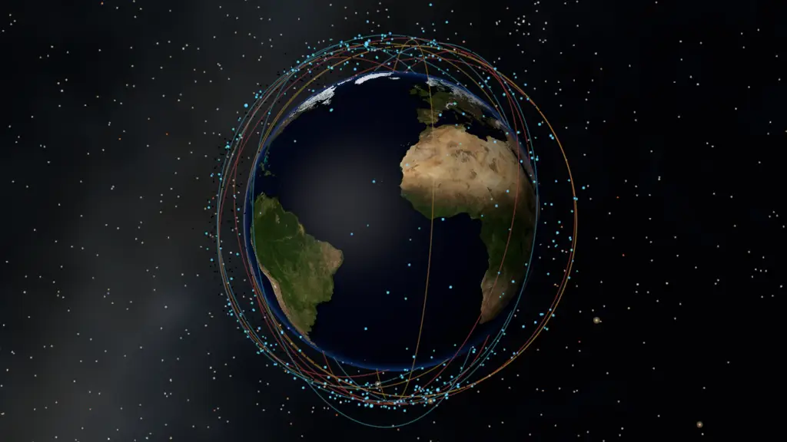

Textured Planets and Orbital Debris¶
This example combines a textured Earth with real catalogued orbital debris.
Preview¶

Run And Adapt¶
Commands below assume a Datoviz source checkout and start at the repository root. Use your configured build environment; Python routes additionally require local bindings.
| Route | Availability | Command or action |
|---|---|---|
| C | Canonical native source | just example-c showcases/textured_planet (build and run), or rerun ./build/examples/c/showcases/textured_planet |
| Python | Available | python3 -m examples.python.gallery.showcases.textured_planet |
| Browser | Live WebGPU route | Open live example |
Prepared data required
This example intentionally fails when its prepared input is absent; it does not
substitute synthetic data.
Expected input: .cache/datoviz/examples/orbital_debris/prepared; .cache/datoviz/examples/planet_sky/prepared.
Prepare it from the repository root with uv run tools/data/prepare_orbital_debris.py --force && uv run tools/data/prepare_planet_sky.py --force.
Use this example as capability or integration evidence, not as a minimal copy-paste template. Start from the nearest supported, copy-safe example and add this feature after verifying the linked API reference.
What To Look For¶
dvz_geometry_sphere() creates positions, normals, UVs, and indices; the mesh visual receives that geometry plus an RGBA8 sampled field bound to the mesh texture slot. Compare the lit Earth or Mars sphere with the Gaia/2MASS celestial background and, for Earth, real catalogued debris propagated with SGP4. Object sizes are exaggerated; the trajectories, debris positions, and celestial directions are data-derived.
The example uses real texture files from the data submodule when available. Earth has a generated fallback for local development; Mars requires its real texture file and is unavailable when that file is missing.
Prepare the debris ephemeris before running: uv run tools/data/prepare_orbital_debris.py --force uv run tools/data/prepare_planet_sky.py --force
Control: --live opens the planet controls docked on the left
Source¶
#!/usr/bin/env python3
"""Textured Earth with real CelesTrak debris and a snapshot-oriented Gaia/2MASS sky."""
from __future__ import annotations
import ctypes
import struct
from dataclasses import dataclass
from pathlib import Path
import numpy as np
from PIL import Image
import datoviz as dvz
from examples.python.gallery import common as ex
TEXTURE_WIDTH = 1024
TEXTURE_HEIGHT = 512
EARTH_TEXTURE_PATH = Path('data/assets/textures/world.200412.3x5400x2700.jpg')
SPHERE_RADIUS = 0.92
ATMOSPHERE_RADIUS = 0.932
SPHERE_SECTORS = 96
SPHERE_RINGS = 48
ORBIT_DATA_PATHS = (
Path('data/examples/orbital_debris/prepared/orbital_debris.bin'),
Path('.cache/datoviz/examples/orbital_debris/prepared/orbital_debris.bin'),
)
SKY_DATA_PATHS = (
Path('data/examples/planet_sky/prepared/planet_sky.bin'),
Path('.cache/datoviz/examples/planet_sky/prepared/planet_sky.bin'),
)
DEBRIS_TIME_SCALE = 60.0
DEBRIS_DEFAULT_COUNT = 520
GLOBE_ROTATION_SPEED = 0.035
CAMERA_EYE = (-1.229315, +0.262005, +3.539440)
CAMERA_UP = (+0.022887, +0.997564, -0.065895)
ORBIT_TRACE_COUNT = 12
ORBIT_TRACE_SAMPLES = 121
ORBIT_GLOW_WIDTH_PX = 1.8
ORBIT_GLOW_ALPHA = 4
ORBIT_CORE_WIDTH_PX = 0.42
ORBIT_CORE_ALPHA = 72
SUN_DIR = (-0.80, +0.22, +0.55)
TAU = 2.0 * np.pi
ORBIT_HEADER = struct.Struct('<8sIIIIIddff32s')
SKY_HEADER = struct.Struct('<8sIIII32s')
PANEL_BG = dvz.DvzColor(2, 2, 4, 255)
@dataclass(frozen=True)
class OrbitModel:
"""Prepared catalog metadata and SGP4 ephemeris."""
event_ids: np.ndarray
catalog_ids: np.ndarray
ephemeris: np.ndarray
closed_traces: np.ndarray
snapshot_utc: str
step_seconds: float
duration_seconds: float
@dataclass(frozen=True)
class SkyLayer:
"""One prepared celestial point layer."""
positions: np.ndarray
colors: np.ndarray
sizes: np.ndarray
@dataclass(frozen=True)
class SkyTexture:
"""Prepared 2MASS RGBA texture and its celestial orientation."""
rgba: np.ndarray
transform: np.ndarray
@dataclass(frozen=True)
class SkyModel:
"""Gaia stars and a continuous 2MASS Milky Way in the snapshot celestial frame."""
stars: SkyLayer
galaxy: SkyTexture
snapshot_utc: str
@dataclass
class GlobeState:
"""Python-owned shared rotation track."""
rotation: object | None = None
def destroy(self) -> None:
"""Destroy the shared track after the scene run ends."""
if self.rotation:
dvz.dvz_track_destroy(self.rotation)
self.rotation = None
def _load_orbit_model() -> OrbitModel:
path = next((candidate for candidate in ORBIT_DATA_PATHS if candidate.exists()), None)
if path is None:
raise RuntimeError(
'missing real orbital-debris ephemeris; run '
'`uv run tools/data/prepare_orbital_debris.py --force`'
)
payload = path.read_bytes()
if len(payload) < ORBIT_HEADER.size:
raise RuntimeError(f'truncated orbital-debris ephemeris: {path}')
(
magic,
version,
object_count,
frame_count,
event_count,
trace_sample_count,
_start_unix_s,
step_seconds,
_earth_radius_km,
_max_radius,
snapshot_field,
) = ORBIT_HEADER.unpack_from(payload)
if (
magic != b'DVZORB1\0'
or version != 2
or object_count <= 0
or frame_count < 2
or event_count != 3
or trace_sample_count < 3
or step_seconds <= 0
):
raise RuntimeError(f'invalid orbital-debris ephemeris header: {path}')
event_offset = ORBIT_HEADER.size
catalog_offset = event_offset + object_count
position_offset = catalog_offset + 4 * object_count
trace_offset = position_offset + 12 * object_count * frame_count
expected_size = trace_offset + 12 * object_count * trace_sample_count
if len(payload) != expected_size:
raise RuntimeError(f'unexpected orbital-debris ephemeris size: {path}')
event_ids = np.frombuffer(
payload, dtype=np.uint8, count=object_count, offset=event_offset
).copy()
catalog_ids = np.frombuffer(
payload, dtype='<u4', count=object_count, offset=catalog_offset
).copy()
ephemeris = np.frombuffer(
payload,
dtype='<f4',
count=3 * object_count * frame_count,
offset=position_offset,
).reshape(frame_count, object_count, 3)
closed_traces = np.frombuffer(
payload,
dtype='<f4',
count=3 * object_count * trace_sample_count,
offset=trace_offset,
).reshape(object_count, trace_sample_count, 3)
snapshot_utc = snapshot_field.split(b'\0', 1)[0].decode('ascii')
return OrbitModel(
event_ids,
catalog_ids,
ephemeris,
closed_traces,
snapshot_utc,
float(step_seconds),
float(step_seconds * (frame_count - 1)),
)
def _load_sky_model() -> SkyModel:
path = next((candidate for candidate in SKY_DATA_PATHS if candidate.exists()), None)
if path is None:
raise RuntimeError(
'missing real Gaia/2MASS sky; run `uv run tools/data/prepare_planet_sky.py`'
)
payload = path.read_bytes()
if len(payload) < SKY_HEADER.size:
raise RuntimeError(f'truncated celestial-sky binary: {path}')
header = SKY_HEADER.unpack_from(payload)
magic, version, star_count, galaxy_width, galaxy_height, snapshot_field = header
if (
magic != b'DVZSKY2\0'
or version != 2
or star_count <= 0
or galaxy_width <= 0
or galaxy_height <= 0
):
raise RuntimeError(f'invalid celestial-sky header: {path}')
def layer(offset: int, count: int) -> tuple[SkyLayer, int]:
position_bytes = 12 * count
color_bytes = 4 * count
size_bytes = 4 * count
end = offset + position_bytes + color_bytes + size_bytes
if end > len(payload):
raise RuntimeError(f'truncated celestial-sky layer: {path}')
positions = np.frombuffer(payload, dtype='<f4', count=3 * count, offset=offset).reshape(
count, 3
)
offset += position_bytes
colors = np.frombuffer(payload, dtype=np.uint8, count=4 * count, offset=offset).reshape(
count, 4
)
offset += color_bytes
sizes = np.frombuffer(payload, dtype='<f4', count=count, offset=offset)
return SkyLayer(positions, colors, sizes), end
transform_offset = SKY_HEADER.size
transform_end = transform_offset + 9 * 4
if transform_end > len(payload):
raise RuntimeError(f'truncated celestial-sky transform: {path}')
transform = np.frombuffer(
payload, dtype='<f4', count=9, offset=transform_offset
).reshape(3, 3)
stars, offset = layer(transform_end, star_count)
galaxy_end = offset + 4 * galaxy_width * galaxy_height
if galaxy_end > len(payload):
raise RuntimeError(f'truncated celestial-sky texture: {path}')
galaxy_rgba = np.frombuffer(
payload,
dtype=np.uint8,
count=4 * galaxy_width * galaxy_height,
offset=offset,
).reshape(galaxy_height, galaxy_width, 4)
galaxy = SkyTexture(galaxy_rgba, transform)
offset = galaxy_end
if offset != len(payload):
raise RuntimeError(f'unexpected celestial-sky binary size: {path}')
snapshot_utc = snapshot_field.split(b'\0', 1)[0].decode('ascii')
return SkyModel(stars, galaxy, snapshot_utc)
def _orbit_positions(model: OrbitModel, time_s: float) -> np.ndarray:
wrapped_time = float(time_s) % model.duration_seconds
frame = wrapped_time / model.step_seconds
frame0 = min(int(np.floor(frame)), len(model.ephemeris) - 1)
frame1 = min(frame0 + 1, len(model.ephemeris) - 1)
alpha = np.float32(frame - frame0 if frame1 > frame0 else 0.0)
return np.ascontiguousarray(
model.ephemeris[frame0] + alpha * (model.ephemeris[frame1] - model.ephemeris[frame0]),
dtype=np.float32,
)
def _orbit_trace(model: OrbitModel, index: int) -> np.ndarray:
source = model.closed_traces[index]
if len(source) == ORBIT_TRACE_SAMPLES:
trace = np.array(source, dtype=np.float32, copy=True, order='C')
else:
source_positions = np.linspace(0, len(source) - 1, ORBIT_TRACE_SAMPLES)
source0 = np.floor(source_positions).astype(np.int32)
source1 = np.minimum(source0 + 1, len(source) - 1)
alpha = (source_positions - source0).astype(np.float32)[:, None]
trace = np.ascontiguousarray(
source[source0] + alpha * (source[source1] - source[source0]),
dtype=np.float32,
)
trace[-1] = trace[0]
return trace
def _earth_texture() -> np.ndarray:
if EARTH_TEXTURE_PATH.exists():
with Image.open(EARTH_TEXTURE_PATH) as image:
image = image.convert('RGBA')
width, height = image.size
if width == 2 * height:
return np.ascontiguousarray(np.asarray(image, dtype=np.uint8))
y = np.linspace(0.0, 1.0, TEXTURE_HEIGHT, dtype=np.float64)
x = np.linspace(0.0, 1.0, TEXTURE_WIDTH, dtype=np.float64)
u, v = np.meshgrid(x, y)
lat = (0.5 - v) * np.pi
lon = (u - 0.5) * TAU
bands = (
np.sin(12.0 * lon + 1.7 * np.sin(5.0 * lat))
+ 0.72 * np.sin(9.0 * lat + 2.2 * np.cos(3.0 * lon))
+ 0.38 * np.sin(21.0 * (lon + lat))
)
ridge = np.sin(34.0 * lon) * np.sin(16.0 * lat)
land = bands + 0.28 * ridge > 0.38
ice = np.abs(lat) > 1.22
grid_u = np.abs(u * 24.0 - np.floor(u * 24.0 + 0.5))
grid_v = np.abs(v * 12.0 - np.floor(v * 12.0 + 0.5))
grid = (grid_u < 0.015) | (grid_v < 0.015)
r = np.full_like(u, 0.05)
g = np.full_like(u, 0.13)
b = np.full_like(u, 0.27)
warm = np.clip(0.5 + 0.5 * np.sin(5.0 * lon - 7.0 * lat), 0.0, 1.0)
latitude_weight = 1.0 - np.abs(lat) / (0.5 * np.pi)
r = np.where(land, 0.20 + 0.38 * warm, r)
g = np.where(land, 0.34 + 0.32 * latitude_weight, g)
b = np.where(land, 0.16 + 0.12 * (1.0 - warm), b)
water = 0.5 + 0.5 * np.sin(8.0 * lon + 5.0 * lat)
r = np.where(~land, 0.03 + 0.05 * water, r)
g = np.where(~land, 0.20 + 0.18 * water, g)
b = np.where(~land, 0.44 + 0.22 * water, b)
r = np.where(ice, 0.84, r)
g = np.where(ice, 0.90, g)
b = np.where(ice, 0.93, b)
r = np.where(grid, 0.92, r)
g = np.where(grid, 0.94, g)
b = np.where(grid, 0.86, b)
rgba = np.empty((TEXTURE_HEIGHT, TEXTURE_WIDTH, 4), dtype=np.uint8)
rgba[..., 0] = np.clip(255.0 * r + 0.5, 0, 255).astype(np.uint8)
rgba[..., 1] = np.clip(255.0 * g + 0.5, 0, 255).astype(np.uint8)
rgba[..., 2] = np.clip(255.0 * b + 0.5, 0, 255).astype(np.uint8)
rgba[..., 3] = 255
return rgba
def _planet_transform():
transform = ((ctypes.c_double * 4) * 4)()
transform[0][1] = -1.0
transform[1][2] = +1.0
transform[2][0] = -1.0
transform[3][3] = 1.0
return transform
def _add_star_layer(scene, panel, layer: SkyLayer, *, halo: bool) -> None:
positions = layer.positions
colors = layer.colors
sizes = layer.sizes
if halo:
bright = sizes >= 2.6
positions = np.ascontiguousarray(positions[bright])
colors = np.ascontiguousarray(colors[bright].copy())
sizes = np.ascontiguousarray(2.8 * sizes[bright] + 1.5, dtype=np.float32)
colors[:, 3] = np.minimum(54.0, 12.0 + 7.0 * layer.sizes[bright]).astype(np.uint8)
stars = dvz.dvz_point(scene, 0)
if not stars:
raise RuntimeError('dvz_point() failed')
if (
dvz.dvz_visual_set_data_many(
stars,
{
'position': positions,
'color': colors,
'diameter_px': sizes,
},
)
!= 0
):
raise RuntimeError('dvz_visual_set_data_many(stars) failed')
ex.set_filled_point_style(stars)
if dvz.dvz_visual_set_depth_test(stars, True) != 0:
raise RuntimeError('dvz_visual_set_depth_test(stars) failed')
if dvz.dvz_visual_set_alpha_mode(stars, dvz.DVZ_ALPHA_BLENDED) != 0:
raise RuntimeError('dvz_visual_set_alpha_mode(stars) failed')
if dvz.dvz_visual_set_blend_mode(stars, dvz.DVZ_BLEND_ADDITIVE) != 0:
raise RuntimeError('dvz_visual_set_blend_mode(stars) failed')
ex.add_visual(panel, stars)
def _add_galaxy_layer(scene, panel, texture: SkyTexture) -> None:
field = dvz.dvz_sampled_field_from_array(scene, texture.rgba)
desc = dvz.dvz_geometry_sphere_desc()
desc.radius = 45.0
desc.sectors = SPHERE_SECTORS
desc.rings = SPHERE_RINGS
desc.color = ex.WHITE
geometry = dvz.dvz_geometry_sphere(ctypes.byref(desc))
if not geometry:
raise RuntimeError('dvz_geometry_sphere(galaxy) failed')
galaxy = dvz.dvz_mesh(scene, 0)
if not galaxy:
dvz.dvz_geometry_destroy(geometry)
raise RuntimeError('dvz_mesh(galaxy) failed')
try:
transform = ((ctypes.c_double * 4) * 4)()
for row in range(3):
for column in range(3):
transform[column][row] = float(texture.transform[row, column])
transform[3][3] = 1.0
if dvz.dvz_geometry_transform(geometry, transform) != 0:
raise RuntimeError('dvz_geometry_transform(galaxy) failed')
if dvz.dvz_mesh_set_geometry(galaxy, geometry) != 0:
raise RuntimeError('dvz_mesh_set_geometry(galaxy) failed')
finally:
dvz.dvz_geometry_destroy(geometry)
material = dvz.dvz_material_desc()
material.model = dvz.DVZ_MATERIAL_MODEL_UNLIT
material.alpha_mode = dvz.DVZ_ALPHA_BLENDED
material.opacity = 0.72
if dvz.dvz_visual_set_material(galaxy, ctypes.byref(material)) != 0:
raise RuntimeError('dvz_visual_set_material(galaxy) failed')
if dvz.dvz_visual_set_field(galaxy, b'texture', field) != 0:
raise RuntimeError('dvz_visual_set_field(galaxy) failed')
if dvz.dvz_visual_set_depth_test(galaxy, True) != 0:
raise RuntimeError('dvz_visual_set_depth_test(galaxy) failed')
ex.add_visual(panel, galaxy)
def _planet_material():
material = dvz.dvz_phong_material_desc()
material.light_direction[:] = SUN_DIR
material.phong.ambient = 0.075
material.phong.diffuse = 1.02
material.phong.specular = 0.025
material.phong.shininess = 22.0
return material
def _add_planet(scene, panel):
field = dvz.dvz_sampled_field_from_array(scene, _earth_texture())
desc = dvz.dvz_geometry_sphere_desc()
desc.radius = SPHERE_RADIUS
desc.sectors = SPHERE_SECTORS
desc.rings = SPHERE_RINGS
desc.color = ex.WHITE
geometry = dvz.dvz_geometry_sphere(ctypes.byref(desc))
if not geometry:
raise RuntimeError('dvz_geometry_sphere() failed')
mesh = dvz.dvz_mesh(scene, 0)
if not mesh:
dvz.dvz_geometry_destroy(geometry)
raise RuntimeError('dvz_mesh() failed')
try:
if dvz.dvz_geometry_transform(geometry, _planet_transform()) != 0:
raise RuntimeError('dvz_geometry_transform() failed')
if dvz.dvz_mesh_set_geometry(mesh, geometry) != 0:
raise RuntimeError('dvz_mesh_set_geometry() failed')
finally:
dvz.dvz_geometry_destroy(geometry)
material = _planet_material()
if dvz.dvz_visual_set_material(mesh, ctypes.byref(material)) != 0:
raise RuntimeError('dvz_visual_set_material() failed')
if dvz.dvz_visual_set_field(mesh, b'texture', field) != 0:
raise RuntimeError('dvz_visual_set_field(texture) failed')
ex.add_visual(panel, mesh)
return mesh
def _add_atmosphere(scene, panel):
desc = dvz.dvz_geometry_sphere_desc()
desc.radius = ATMOSPHERE_RADIUS
desc.sectors = SPHERE_SECTORS
desc.rings = SPHERE_RINGS
desc.color = ex.WHITE
geometry = dvz.dvz_geometry_sphere(ctypes.byref(desc))
if not geometry:
raise RuntimeError('dvz_geometry_sphere(atmosphere) failed')
atmosphere = dvz.dvz_mesh(scene, 0)
if not atmosphere:
dvz.dvz_geometry_destroy(geometry)
raise RuntimeError('dvz_mesh(atmosphere) failed')
try:
if dvz.dvz_geometry_transform(geometry, _planet_transform()) != 0:
raise RuntimeError('dvz_geometry_transform(atmosphere) failed')
if dvz.dvz_mesh_set_geometry(atmosphere, geometry) != 0:
raise RuntimeError('dvz_mesh_set_geometry(atmosphere) failed')
finally:
dvz.dvz_geometry_destroy(geometry)
material = dvz.dvz_limb_material_desc()
material.opacity = 0.10
material.light_direction[:] = SUN_DIR
material.limb.falloff = 20.0
material.limb.sun_bias = 0.06
material.limb.terminator_width = 0.16
material.limb.night_factor = 0.035
if dvz.dvz_visual_set_material(atmosphere, ctypes.byref(material)) != 0:
raise RuntimeError('dvz_visual_set_material(atmosphere) failed')
if dvz.dvz_visual_set_blend_mode(atmosphere, dvz.DVZ_BLEND_ADDITIVE) != 0:
raise RuntimeError('dvz_visual_set_blend_mode(atmosphere) failed')
if dvz.dvz_visual_set_depth_test(atmosphere, True) != 0:
raise RuntimeError('dvz_visual_set_depth_test(atmosphere) failed')
ex.add_visual(panel, atmosphere)
return atmosphere
def _add_orbit_traces(
scene,
panel,
model: OrbitModel,
stroke_width: float,
alpha: int,
):
indices: list[int] = []
trace_events: list[int] = []
selections_per_event = (ORBIT_TRACE_COUNT + 2) // 3
for trace_index in range(ORBIT_TRACE_COUNT):
event_id = trace_index % 3
event_indices = np.flatnonzero(model.event_ids == event_id)
ordinal = trace_index // 3
index = event_indices[ordinal * len(event_indices) // selections_per_event]
indices.append(int(index))
trace_events.append(event_id)
positions = np.concatenate([_orbit_trace(model, int(index)) for index in indices])
sample_count = len(positions)
palette = np.array(
[[104, 220, 255, alpha], [255, 196, 92, alpha], [255, 112, 96, alpha]],
dtype=np.uint8,
)
colors = np.concatenate(
[np.tile(palette[event_id], (ORBIT_TRACE_SAMPLES, 1)) for event_id in trace_events]
)
assert len(colors) == sample_count
widths = np.full(sample_count, stroke_width, dtype=np.float32)
subpaths = np.full(ORBIT_TRACE_COUNT, ORBIT_TRACE_SAMPLES, dtype=np.uint32)
path = dvz.dvz_path(scene, 0)
if not path:
raise RuntimeError('dvz_path() failed')
if (
dvz.dvz_visual_set_data_many(
path,
{
'position': positions,
'color': colors,
'stroke_width_px': widths,
},
)
!= 0
):
raise RuntimeError('dvz_visual_set_data_many(orbits) failed')
lengths = np.ctypeslib.as_ctypes(subpaths)
if dvz.dvz_path_set_subpaths(path, ORBIT_TRACE_COUNT, lengths) != 0:
raise RuntimeError('dvz_path_set_subpaths() failed')
if dvz.dvz_path_set_join(path, dvz.DVZ_PATH_JOIN_ROUND, 4.0) != 0:
raise RuntimeError('dvz_path_set_join() failed')
if dvz.dvz_visual_set_depth_test(path, True) != 0:
raise RuntimeError('dvz_visual_set_depth_test(orbits) failed')
if dvz.dvz_visual_set_alpha_mode(path, dvz.DVZ_ALPHA_BLENDED) != 0:
raise RuntimeError('dvz_visual_set_alpha_mode(orbits) failed')
ex.add_visual(panel, path)
return path
def _add_debris(scene, panel, model: OrbitModel):
positions = _orbit_positions(model, 0.0)
palette = np.array(
[[104, 220, 255, 255], [255, 196, 92, 255], [255, 112, 96, 255]],
dtype=np.uint8,
)
colors = palette[model.event_ids]
sizes = (1.4 + 2.1 * ((37 * model.catalog_ids.astype(np.uint64)) % 101) / 100.0).astype(
np.float32
)
sizes[model.catalog_ids % 79 == 0] = 5.0
colors[DEBRIS_DEFAULT_COUNT:, 3] = 0
sizes[DEBRIS_DEFAULT_COUNT:] = 0.0
points = dvz.dvz_point(scene, 0)
if not points:
raise RuntimeError('dvz_point() failed')
if (
dvz.dvz_visual_set_data_many(
points,
{
'position': positions,
'color': colors,
'diameter_px': sizes,
},
)
!= 0
):
raise RuntimeError('dvz_visual_set_data_many(debris) failed')
ex.set_filled_point_style(points)
if dvz.dvz_visual_set_depth_test(points, True) != 0:
raise RuntimeError('dvz_visual_set_depth_test(debris) failed')
ex.add_visual(panel, points)
return points
def _setup_camera(panel) -> None:
camera = dvz.dvz_camera_desc()
camera.view.eye[:] = CAMERA_EYE
camera.view.target[:] = (0.0, 0.0, 0.0)
camera.view.up[:] = CAMERA_UP
camera.projection.fov_y = 0.72
camera.projection.near_clip = 0.005
camera.projection.far_clip = 100.0
if dvz.dvz_panel_set_camera_desc(panel, ctypes.byref(camera)) != 0:
raise RuntimeError('dvz_panel_set_camera_desc() failed')
def _add_globe_rotation(scene, visuals, state: GlobeState) -> None:
rotation_desc = dvz.dvz_track_rotation_desc()
rotation_desc.axis[:] = (0.0, 1.0, 0.0)
rotation_desc.speed_rad_per_sec = 1.0
rotation = dvz.dvz_track_rotation(ctypes.byref(rotation_desc))
if not rotation:
raise RuntimeError('dvz_track_rotation() failed')
state.rotation = rotation
for visual in visuals:
transform_desc = dvz.dvz_transform_motion_desc()
transform_desc.rotation = rotation
animation = dvz.dvz_anim_visual_transform(scene, visual, ctypes.byref(transform_desc))
if not animation:
raise RuntimeError('dvz_anim_visual_transform() failed')
if dvz.dvz_anim_set_speed(animation, GLOBE_ROTATION_SPEED) != 0:
raise RuntimeError('dvz_anim_set_speed() failed')
if dvz.dvz_anim_start(animation, 0.0) != 0:
raise RuntimeError('dvz_anim_start() failed')
def _build_scene():
scene, figure, panel = ex.scene_panel()
dvz.dvz_panel_set_background_color(panel, PANEL_BG)
_setup_camera(panel)
sky_model = _load_sky_model()
_add_galaxy_layer(scene, panel, sky_model.galaxy)
_add_star_layer(scene, panel, sky_model.stars, halo=True)
_add_star_layer(scene, panel, sky_model.stars, halo=False)
mesh = _add_planet(scene, panel)
_atmosphere = _add_atmosphere(scene, panel)
orbit_model = _load_orbit_model()
if sky_model.snapshot_utc != orbit_model.snapshot_utc:
raise RuntimeError('celestial sky and orbital-debris snapshots do not match')
orbit_glow = _add_orbit_traces(
scene, panel, orbit_model, ORBIT_GLOW_WIDTH_PX, ORBIT_GLOW_ALPHA
)
orbits = _add_orbit_traces(
scene, panel, orbit_model, ORBIT_CORE_WIDTH_PX, ORBIT_CORE_ALPHA
)
debris = _add_debris(scene, panel, orbit_model)
state = GlobeState()
_add_globe_rotation(scene, (mesh, orbit_glow, orbits, debris), state)
return scene, figure, panel, mesh, debris, orbit_model, state
def _configure_view(view, panel) -> None:
desc = dvz.dvz_turntable_desc()
desc.initial_view.eye[:] = CAMERA_EYE
desc.initial_view.target[:] = (0.0, 0.0, 0.0)
desc.initial_view.up[:] = (0.0, 1.0, 0.0)
desc.min_distance = 1.02
desc.max_distance = 20.0
desc.zoom_speed = 0.018
turntable = dvz.dvz_view_turntable(view, panel, ctypes.byref(desc))
if not turntable:
raise RuntimeError('dvz_view_turntable() failed')
def main() -> None:
scene, figure, panel, _mesh, debris, orbit_model, state = _build_scene()
def configure(view) -> None:
_configure_view(view, panel)
def on_frame(_view, _frame_index: int, elapsed: float) -> None:
positions = _orbit_positions(orbit_model, elapsed * DEBRIS_TIME_SCALE)
if dvz.dvz_visual_set_data(debris, 'position', positions) != 0:
raise RuntimeError('dvz_visual_set_data(debris) failed')
print(
f'textured_planet: {len(orbit_model.catalog_ids)} real catalogued objects, '
f'snapshot {orbit_model.snapshot_utc}'
)
try:
ex.run_with_frame_callback(
scene,
figure,
'Textured Planets and Orbital Debris',
on_frame,
configure,
)
finally:
state.destroy()
if __name__ == '__main__':
main()
/*
* Copyright (c) 2021 Cyrille Rossant and contributors. All rights reserved.
* Licensed under the MIT license. See LICENSE file in the project root for details.
* SPDX-License-Identifier: MIT
*/
/* textured_planet - This example combines a textured Earth with real catalogued orbital debris.
*
* Scenario: showcases_textured_planet
* Style: showcase, graphite_cyan, 1280x720 window target
*
* What to look for: `dvz_geometry_sphere()` creates positions, normals, UVs, and indices; the mesh
* visual receives that geometry plus an RGBA8 sampled field bound to the mesh texture slot.
* Compare the lit Earth or Mars sphere with the Gaia/2MASS celestial background and, for Earth,
* real catalogued debris propagated with SGP4. Object sizes are exaggerated; the trajectories,
* debris positions, and celestial directions are data-derived.
*
* The example uses real texture files from the data submodule when available. Earth has a
* generated fallback for local development; Mars requires its real texture file and is unavailable
* when that file is missing.
*
* Prepare the debris ephemeris before running:
* uv run tools/data/prepare_orbital_debris.py --force
* uv run tools/data/prepare_planet_sky.py --force
*
* Build: just example-c showcases/textured_planet
* Run: ./build/examples/c/showcases/textured_planet --live
* Smoke: ./build/examples/c/showcases/textured_planet --png
* DVZR: ./build/examples/c/showcases/textured_planet --dvzr 60
* Video: ./build/examples/c/showcases/textured_planet --offscreen-record 60
* Control: --live opens the planet controls docked on the left
*/
/*************************************************************************************************/
/* Includes */
/*************************************************************************************************/
#include <math.h>
#include <stdbool.h>
#include <stdint.h>
#include <stdio.h>
#include "_alloc.h"
#include "datoviz/fileio.h"
#include "datoviz/geom.h"
#ifndef DVZ_EXAMPLE_NO_MAIN
#include "datoviz/gui.h"
#endif
#include "datoviz/scene.h"
#include "example_common.h"
#include "example_tuner.h"
#include "runner/scenario_runner.h"
#include "textured_planet_orbits.h"
#include "textured_planet_sky.h"
/*************************************************************************************************/
/* Constants */
/*************************************************************************************************/
#define WIDTH EXAMPLE_WINDOW_WIDTH
#define HEIGHT EXAMPLE_WINDOW_HEIGHT
#define TEXTURE_WIDTH 1024
#define TEXTURE_HEIGHT 512
#define EARTH_TEXTURE_PATH "data/assets/textures/world.200412.3x5400x2700.jpg"
#define EARTH_TEXTURE_FALLBACK_PATH "data/assets/textures/earth.jpg"
#define MARS_TEXTURE_PATH "data/assets/textures/mars_viking_mdim21.jpg"
#define SPHERE_RADIUS 0.92
#define ATMOSPHERE_RADIUS 0.932
#define SPHERE_SECTORS 96
#define SPHERE_RINGS 48
static const float TAU = 6.28318530718f;
#define ORBIT_DATA_PATH "data/examples/orbital_debris/prepared/orbital_debris.bin"
#define ORBIT_CACHE_PATH ".cache/datoviz/examples/orbital_debris/prepared/orbital_debris.bin"
#define SKY_DATA_PATH "data/examples/planet_sky/prepared/planet_sky.bin"
#define SKY_CACHE_PATH ".cache/datoviz/examples/planet_sky/prepared/planet_sky.bin"
#define SKY_GALAXY_RADIUS 45.0
#define DEBRIS_TIME_SCALE 60.0f
#define DEBRIS_DEFAULT_COUNT 520
#define GLOBE_ROTATION_SPEED 0.035f
#define ORBIT_TRACE_COUNT 12
#define ORBIT_TRACE_SAMPLES 121
#define ORBIT_GLOW_WIDTH_PX 1.8f
#define ORBIT_GLOW_ALPHA 4
#define ORBIT_CORE_WIDTH_PX 0.42f
#define ORBIT_CORE_ALPHA 72
#define GLOBE_VISUAL_COUNT 4
#define SUN_DIR_X -0.80f
#define SUN_DIR_Y +0.22f
#define SUN_DIR_Z +0.55f
/*************************************************************************************************/
/* Structs */
/*************************************************************************************************/
typedef enum PlanetKind
{
PLANET_EARTH,
PLANET_MARS,
PLANET_COUNT,
} PlanetKind;
typedef struct PlanetTexture
{
DvzSampledField* field;
uint8_t* pixels;
uint32_t width;
uint32_t height;
bool loaded_from_file;
} PlanetTexture;
typedef struct PlanetPreset
{
const char* label;
const char* texture_path;
const char* fallback_path;
bool require_texture_file;
} PlanetPreset;
typedef struct TexturedPlanetState
{
ExampleTuner tuner;
DvzVisual* visual;
DvzVisual* atmosphere_visual;
DvzVisual* star_visual;
DvzVisual* star_glow_visual;
DvzVisual* galaxy_visual;
DvzVisual* debris_visual;
DvzVisual* orbit_visual;
DvzVisual* orbit_glow_visual;
DvzTrack* globe_rotation;
DvzAnimation* globe_animations[GLOBE_VISUAL_COUNT];
PlanetTexture textures[PLANET_COUNT];
TexturedPlanetOrbitModel orbit_model;
TexturedPlanetSkyModel sky_model;
vec3* debris_positions;
DvzColor* debris_colors;
float* debris_sizes;
int planet_index;
bool show_debris;
bool show_orbits;
bool show_atmosphere;
bool show_orbit_glow;
bool show_stars;
bool show_galaxy;
bool animate_debris;
bool rotate_globe;
int debris_count;
float debris_speed;
float globe_speed;
double debris_time;
} TexturedPlanetState;
/*************************************************************************************************/
/* Forward declarations */
/*************************************************************************************************/
DvzScenarioSpec dvz_showcase_textured_planet_scenario(void);
static const PlanetPreset PLANETS[PLANET_COUNT] = {
[PLANET_EARTH] =
{
.label = "Earth",
.texture_path = EARTH_TEXTURE_PATH,
.fallback_path = EARTH_TEXTURE_FALLBACK_PATH,
},
[PLANET_MARS] =
{
.label = "Mars",
.texture_path = MARS_TEXTURE_PATH,
.fallback_path = NULL,
.require_texture_file = true,
},
};
/*************************************************************************************************/
/* Helpers */
/*************************************************************************************************/
/**
* Clamp a scalar to the unit interval.
*
* @param value input value
* @return clamped value
*/
static double _clamp01(double value)
{
if (value < 0.0)
return 0.0;
if (value > 1.0)
return 1.0;
return value;
}
/**
* Convert a normalized scalar to an 8-bit color component.
*
* @param value normalized input value
* @return 8-bit component
*/
static uint8_t _u8(double value)
{
const double clamped = _clamp01(value);
return (uint8_t)(255.0 * clamped + 0.5);
}
/**
* Return whether a texture file exists.
*
* @param path file path
* @return whether the file can be opened for reading
*/
static bool _file_exists(const char* path)
{
ANN(path);
FILE* fp = fopen(path, "rb");
if (fp == NULL)
return false;
fclose(fp);
return true;
}
/**
* Return whether an image has equirectangular planet-map dimensions.
*
* @param width image width
* @param height image height
* @return whether the dimensions are exactly 2:1
*/
static bool _is_equirectangular_texture(uint32_t width, uint32_t height)
{
return height > 0 && width == 2 * height;
}
/**
* Remap the generic Z-up UV sphere into the Y-up planet convention.
*
* The shared geometry helper uses +Z as the polar axis. This showcase presents planets with +Y
* as north. The rotation also places the geometry helper's duplicated UV seam on the back side of
* the default view, so the original equirectangular `u/v` coordinates remain continuous.
*
* @param geometry sphere geometry
*/
static void _prepare_planet_geometry(DvzGeometry* geometry)
{
ANN(geometry);
for (uint32_t i = 0; i < geometry->vertex_count; i++)
{
const double x = geometry->positions[i][0];
const double y = geometry->positions[i][1];
const double z = geometry->positions[i][2];
const double nx = geometry->normals[i][0];
const double ny = geometry->normals[i][1];
const double nz = geometry->normals[i][2];
geometry->positions[i][0] = -y;
geometry->positions[i][1] = z;
geometry->positions[i][2] = -x;
geometry->normals[i][0] = -ny;
geometry->normals[i][1] = nz;
geometry->normals[i][2] = -nx;
}
}
/**
* Fill one procedural Earth-like equirectangular RGBA texture.
*
* @param pixels output RGBA8 texture buffer
* @param width texture width
* @param height texture height
*/
static void _make_earth_texture(uint8_t* pixels, uint32_t width, uint32_t height)
{
ANN(pixels);
ASSERT(width > 1);
ASSERT(height > 1);
for (uint32_t y = 0; y < height; y++)
{
const double v = (double)y / (double)(height - 1);
const double lat = (0.5 - v) * DVZ_PI;
for (uint32_t x = 0; x < width; x++)
{
const double u = (double)x / (double)(width - 1);
const double lon = (u - 0.5) * 2.0 * DVZ_PI;
const double bands = sin(12.0 * lon + 1.7 * sin(5.0 * lat)) +
0.72 * sin(9.0 * lat + 2.2 * cos(3.0 * lon)) +
0.38 * sin(21.0 * (lon + lat));
const double ridge = sin(34.0 * lon) * sin(16.0 * lat);
const bool land = bands + 0.28 * ridge > 0.38;
const bool ice = fabs(lat) > 1.22;
const double grid_u = fabs(u * 24.0 - floor(u * 24.0 + 0.5));
const double grid_v = fabs(v * 12.0 - floor(v * 12.0 + 0.5));
const bool grid = grid_u < 0.015 || grid_v < 0.015;
double r = 0.05;
double g = 0.13;
double b = 0.27;
if (land)
{
const double warm = _clamp01(0.5 + 0.5 * sin(5.0 * lon - 7.0 * lat));
r = 0.20 + 0.38 * warm;
g = 0.34 + 0.32 * (1.0 - fabs(lat) / (0.5 * DVZ_PI));
b = 0.16 + 0.12 * (1.0 - warm);
}
else
{
const double water = 0.5 + 0.5 * sin(8.0 * lon + 5.0 * lat);
r = 0.03 + 0.05 * water;
g = 0.20 + 0.18 * water;
b = 0.44 + 0.22 * water;
}
if (ice)
{
r = 0.84;
g = 0.90;
b = 0.93;
}
if (grid)
{
r = 0.92;
g = 0.94;
b = 0.86;
}
const uint32_t offset = 4 * (y * width + x);
pixels[offset + 0] = _u8(r);
pixels[offset + 1] = _u8(g);
pixels[offset + 2] = _u8(b);
pixels[offset + 3] = 255;
}
}
}
/**
* Try loading a JPEG texture as RGBA8 pixels.
*
* @param primary_path preferred file path
* @param fallback_path fallback file path
* @param width decoded texture width
* @param height decoded texture height
* @return RGBA8 pixel buffer, or NULL when the texture is unavailable or decoding fails
*/
static uint8_t* _load_texture(
const char* primary_path, const char* fallback_path, uint32_t* width, uint32_t* height)
{
ANN(primary_path);
ANN(width);
ANN(height);
*width = 0;
*height = 0;
if (_file_exists(primary_path))
return dvz_read_jpeg(primary_path, width, height);
if (fallback_path != NULL && _file_exists(fallback_path))
return dvz_read_jpeg(fallback_path, width, height);
return NULL;
}
/**
* Create and populate one scene-owned planet texture field.
*
* @param scene scene
* @param kind planet kind
* @param texture texture state to populate
* @return whether the field was created successfully
*/
static bool _create_planet_texture(DvzScene* scene, PlanetKind kind, PlanetTexture* texture)
{
ANN(scene);
ANN(texture);
ASSERT(kind < PLANET_COUNT);
const PlanetPreset* preset = &PLANETS[kind];
texture->pixels = _load_texture(
preset->texture_path, preset->fallback_path, &texture->width, &texture->height);
texture->loaded_from_file = texture->pixels != NULL;
if (texture->pixels != NULL && !_is_equirectangular_texture(texture->width, texture->height))
{
fprintf(
stderr,
"textured_planet: ignoring %s texture with non-equirectangular dimensions %ux%u\n",
preset->label, texture->width, texture->height);
dvz_free(texture->pixels);
texture->pixels = NULL;
texture->width = 0;
texture->height = 0;
texture->loaded_from_file = false;
}
if (texture->pixels == NULL)
{
if (preset->require_texture_file)
{
fprintf(
stderr, "textured_planet: %s texture unavailable: missing %s\n", preset->label,
preset->texture_path);
return true;
}
texture->width = TEXTURE_WIDTH;
texture->height = TEXTURE_HEIGHT;
texture->pixels =
(uint8_t*)dvz_calloc((DvzSize)texture->width * texture->height * 4, sizeof(uint8_t));
if (texture->pixels == NULL)
return false;
_make_earth_texture(texture->pixels, texture->width, texture->height);
}
texture->field = dvz_sampled_field(
scene, &(DvzSampledFieldDesc){
DVZ_STRUCT_INIT_FIELDS(DvzSampledFieldDesc),
.dim = DVZ_FIELD_DIM_2D,
.format = DVZ_FIELD_FORMAT_RGBA8_UNORM,
.semantic = DVZ_FIELD_SEMANTIC_COLOR,
.width = texture->width,
.height = texture->height,
.depth = 1,
});
if (texture->field == NULL)
return false;
return dvz_sampled_field_set_data(
texture->field, &(DvzFieldDataView){
DVZ_STRUCT_INIT_FIELDS(DvzFieldDataView),
.data = texture->pixels,
.bytes_per_row = texture->width * 4,
.rows_per_image = texture->height,
}) == DVZ_OK;
}
/**
* Create the real Gaia star layer or its restrained bright-star halo.
*
* @param scene scene
* @param panel panel receiving the visual
* @param layer prepared Gaia layer
* @param halo whether to retain only bright stars and expand them into faint halos
* @return point visual, or NULL on failure
*/
static DvzVisual* _create_star_layer(
DvzScene* scene, DvzPanel* panel, const TexturedPlanetSkyLayer* layer, bool halo)
{
ANN(scene);
ANN(panel);
ANN(layer);
if (layer->count == 0 || layer->positions == NULL || layer->colors == NULL ||
layer->sizes == NULL)
{
return NULL;
}
uint32_t count = layer->count;
vec3* positions = layer->positions;
DvzColor* colors = layer->colors;
float* sizes = layer->sizes;
vec3* halo_positions = NULL;
DvzColor* halo_colors = NULL;
float* halo_sizes = NULL;
DvzVisual* points = NULL;
if (halo)
{
count = 0;
for (uint32_t i = 0; i < layer->count; i++)
count += layer->sizes[i] >= 2.6f ? 1u : 0u;
if (count == 0)
return NULL;
halo_positions = (vec3*)dvz_calloc(count, sizeof(vec3));
halo_colors = (DvzColor*)dvz_calloc(count, sizeof(DvzColor));
halo_sizes = (float*)dvz_calloc(count, sizeof(float));
if (halo_positions == NULL || halo_colors == NULL || halo_sizes == NULL)
goto cleanup;
uint32_t halo_index = 0;
for (uint32_t i = 0; i < layer->count; i++)
{
if (layer->sizes[i] < 2.6f)
continue;
dvz_memcpy(
halo_positions[halo_index], sizeof(vec3), layer->positions[i], sizeof(vec3));
halo_colors[halo_index] = layer->colors[i];
halo_colors[halo_index].a = (uint8_t)fminf(54.0f, 12.0f + 7.0f * layer->sizes[i]);
halo_sizes[halo_index] = 2.8f * layer->sizes[i] + 1.5f;
halo_index++;
}
positions = halo_positions;
colors = halo_colors;
sizes = halo_sizes;
}
points = dvz_point(scene, 0);
if (points == NULL)
goto cleanup;
DvzVisualDataUpdate updates[] = {
{.attr_name = "position", .data = positions, .item_count = count},
{.attr_name = "color", .data = colors, .item_count = count},
{.attr_name = "diameter_px", .data = sizes, .item_count = count},
};
DvzResult rc = dvz_visual_set_data_many(points, updates, 3);
DvzPointStyleDesc style = dvz_point_style_desc();
style.aspect = DVZ_SHAPE_ASPECT_FILLED;
style.stroke_width_px = 0.0f;
if (rc == DVZ_OK)
rc = dvz_point_set_style(points, &style);
if (rc == DVZ_OK)
rc = dvz_visual_set_depth_test(points, true);
if (rc == DVZ_OK)
rc = dvz_visual_set_alpha_mode(points, DVZ_ALPHA_BLENDED);
if (rc == DVZ_OK)
rc = dvz_visual_set_blend_mode(points, DVZ_BLEND_ADDITIVE);
if (rc == DVZ_OK)
rc = dvz_panel_add_visual(panel, points, NULL);
if (rc != DVZ_OK)
points = NULL;
cleanup:
dvz_free(halo_positions);
dvz_free(halo_colors);
dvz_free(halo_sizes);
return points;
}
/**
* Create the continuous snapshot-oriented 2MASS sky sphere.
*
* @param scene scene
* @param panel panel receiving the visual
* @param texture prepared 2MASS texture and celestial transform
* @return textured sky mesh, or NULL on failure
*/
static DvzVisual*
_create_galaxy_layer(DvzScene* scene, DvzPanel* panel, const TexturedPlanetSkyTexture* texture)
{
ANN(scene);
ANN(panel);
ANN(texture);
if (texture->rgba == NULL || texture->width == 0 || texture->height == 0)
return NULL;
DvzSampledField* field = dvz_sampled_field(
scene, &(DvzSampledFieldDesc){
DVZ_STRUCT_INIT_FIELDS(DvzSampledFieldDesc), .dim = DVZ_FIELD_DIM_2D,
.format = DVZ_FIELD_FORMAT_RGBA8_UNORM, .semantic = DVZ_FIELD_SEMANTIC_COLOR,
.width = texture->width, .height = texture->height, .depth = 1});
if (field == NULL)
return NULL;
DvzResult rc = dvz_sampled_field_set_data(
field, &(DvzFieldDataView){
DVZ_STRUCT_INIT_FIELDS(DvzFieldDataView), .data = texture->rgba,
.bytes_per_row = texture->width * 4u, .rows_per_image = texture->height});
DvzGeometry* sphere = NULL;
DvzVisual* galaxy = NULL;
if (rc != DVZ_OK)
goto cleanup;
sphere = dvz_geometry_sphere(&(DvzGeometrySphereDesc){
DVZ_STRUCT_INIT_FIELDS(DvzGeometrySphereDesc),
.radius = SKY_GALAXY_RADIUS,
.sectors = SPHERE_SECTORS,
.rings = SPHERE_RINGS,
.color = {255, 255, 255, 255},
});
if (sphere == NULL)
goto cleanup;
dmat4 transform = {{0}};
for (uint32_t row = 0; row < 3; row++)
{
for (uint32_t column = 0; column < 3; column++)
transform[column][row] = texture->transform[3 * row + column];
}
transform[3][3] = 1.0;
if (dvz_geometry_transform(sphere, transform) != DVZ_OK)
goto cleanup;
galaxy = dvz_mesh(scene, 0);
if (galaxy == NULL || dvz_mesh_set_geometry(galaxy, sphere) != DVZ_OK)
{
galaxy = NULL;
goto cleanup;
}
DvzMaterialDesc material = dvz_material_desc();
material.model = DVZ_MATERIAL_MODEL_UNLIT;
material.alpha_mode = DVZ_ALPHA_BLENDED;
material.opacity = 0.72f;
if (dvz_visual_set_material(galaxy, &material) != DVZ_OK ||
dvz_visual_set_field(galaxy, "texture", field) != DVZ_OK ||
dvz_visual_set_depth_test(galaxy, true) != DVZ_OK ||
dvz_panel_add_visual(panel, galaxy, NULL) != DVZ_OK)
{
galaxy = NULL;
}
cleanup:
dvz_geometry_destroy(sphere);
return galaxy;
}
/**
* Return the display color assigned to one real debris event.
*
* @param event_id prepared event index
* @param alpha alpha channel
* @return event color
*/
static DvzColor _debris_event_color(uint8_t event_id, uint8_t alpha)
{
switch (event_id)
{
case 0:
return (DvzColor){104, 220, 255, alpha};
case 1:
return (DvzColor){255, 196, 92, alpha};
case 2:
return (DvzColor){255, 112, 96, alpha};
default:
return (DvzColor){220, 226, 235, alpha};
}
}
/**
* Fill the retained debris colors and point sizes for the active density.
*
* Objects outside the active prefix remain allocated but are fully transparent and zero-sized so
* the GUI can adjust density without changing the retained visual's item count.
*
* @param state example state
*/
static void _state_fill_debris_style(TexturedPlanetState* state)
{
ANN(state);
ANN(state->orbit_model.event_ids);
ANN(state->orbit_model.catalog_ids);
ANN(state->debris_colors);
ANN(state->debris_sizes);
for (uint32_t i = 0; i < state->orbit_model.count; i++)
{
if (i >= (uint32_t)state->debris_count)
{
state->debris_colors[i] = (DvzColor){0, 0, 0, 0};
state->debris_sizes[i] = 0.0f;
continue;
}
state->debris_colors[i] = _debris_event_color(state->orbit_model.event_ids[i], 255);
const uint32_t catalog_id = state->orbit_model.catalog_ids[i];
const float variation = (float)((37u * catalog_id) % 101u) / 100.0f;
state->debris_sizes[i] = 1.4f + 2.1f * variation;
if (catalog_id % 79u == 0)
state->debris_sizes[i] = 5.0f;
}
}
/**
* Upload debris colors and sizes after a density change.
*
* @param state example state
* @return whether the retained update succeeded
*/
static bool _state_upload_debris_style(TexturedPlanetState* state)
{
ANN(state);
if (state->debris_visual == NULL)
return false;
_state_fill_debris_style(state);
const uint32_t count = state->orbit_model.count;
DvzVisualDataUpdate updates[] = {
{.attr_name = "color", .data = state->debris_colors, .item_count = count},
{.attr_name = "size", .data = state->debris_sizes, .item_count = count},
};
return dvz_visual_set_data_many(state->debris_visual, updates, 2) == DVZ_OK;
}
/**
* Select one approximately quantile-spaced object from a prepared debris event.
*
* @param model prepared ephemeris
* @param event_id event index
* @param ordinal zero-based selection within the event
* @param selection_count selections requested for the event
* @return object index
*/
static uint32_t _trace_object_index(
const TexturedPlanetOrbitModel* model, uint8_t event_id, uint32_t ordinal,
uint32_t selection_count)
{
ANN(model);
uint32_t event_count = 0;
for (uint32_t i = 0; i < model->count; i++)
event_count += model->event_ids[i] == event_id ? 1u : 0u;
if (event_count == 0)
return 0;
const uint32_t target = ordinal * event_count / selection_count;
uint32_t current = 0;
for (uint32_t i = 0; i < model->count; i++)
{
if (model->event_ids[i] != event_id)
continue;
if (current++ == target)
return i;
}
return 0;
}
/**
* Create representative subdued orbit traces.
*
* @param scene scene
* @param panel panel receiving the visual
* @param model prepared orbit model
* @param stroke_width path width in pixels
* @param alpha path alpha
* @return orbit path visual, or NULL on failure
*/
static DvzVisual* _create_orbit_traces(
DvzScene* scene, DvzPanel* panel, const TexturedPlanetOrbitModel* model, float stroke_width,
uint8_t alpha)
{
ANN(scene);
ANN(panel);
ANN(model);
ASSERT(model->count >= ORBIT_TRACE_COUNT);
ASSERT(model->event_count > 0);
const uint32_t sample_count = ORBIT_TRACE_COUNT * ORBIT_TRACE_SAMPLES;
vec3* positions = (vec3*)dvz_calloc(sample_count, sizeof(vec3));
DvzColor* colors = (DvzColor*)dvz_calloc(sample_count, sizeof(DvzColor));
float* widths = (float*)dvz_calloc(sample_count, sizeof(float));
uint32_t* subpaths = (uint32_t*)dvz_calloc(ORBIT_TRACE_COUNT, sizeof(uint32_t));
DvzVisual* path = NULL;
if (positions == NULL || colors == NULL || widths == NULL || subpaths == NULL)
goto cleanup;
for (uint32_t trace_index = 0; trace_index < ORBIT_TRACE_COUNT; trace_index++)
{
const uint8_t event_id = (uint8_t)(trace_index % model->event_count);
const uint32_t ordinal = trace_index / model->event_count;
const uint32_t selection_count =
(ORBIT_TRACE_COUNT + model->event_count - 1) / model->event_count;
const uint32_t orbit_index =
_trace_object_index(model, event_id, ordinal, selection_count);
const uint32_t offset = trace_index * ORBIT_TRACE_SAMPLES;
textured_planet_orbit_model_trace(
model, orbit_index, ORBIT_TRACE_SAMPLES, &positions[offset]);
subpaths[trace_index] = ORBIT_TRACE_SAMPLES;
for (uint32_t j = 0; j < ORBIT_TRACE_SAMPLES; j++)
{
colors[offset + j] = _debris_event_color(event_id, alpha);
widths[offset + j] = stroke_width;
}
}
path = dvz_path(scene, 0);
if (path == NULL)
goto cleanup;
DvzVisualDataUpdate updates[] = {
{.attr_name = "position", .data = positions, .item_count = sample_count},
{.attr_name = "color", .data = colors, .item_count = sample_count},
{.attr_name = "stroke_width_px", .data = widths, .item_count = sample_count},
};
if (dvz_visual_set_data_many(path, updates, 3) != DVZ_OK)
{
path = NULL;
goto cleanup;
}
if (dvz_path_set_subpaths(path, ORBIT_TRACE_COUNT, subpaths) != DVZ_OK)
{
path = NULL;
goto cleanup;
}
if (dvz_path_set_join(path, DVZ_PATH_JOIN_ROUND, 4.0f) != DVZ_OK)
{
path = NULL;
goto cleanup;
}
if (dvz_visual_set_depth_test(path, true) != DVZ_OK)
{
path = NULL;
goto cleanup;
}
if (dvz_visual_set_alpha_mode(path, DVZ_ALPHA_BLENDED) != DVZ_OK)
{
path = NULL;
goto cleanup;
}
if (dvz_panel_add_visual(panel, path, NULL) != DVZ_OK)
path = NULL;
cleanup:
dvz_free(positions);
dvz_free(colors);
dvz_free(widths);
dvz_free(subpaths);
return path;
}
/**
* Create the thin translucent atmosphere shell around Earth.
*
* A view-dependent limb material keeps the shell nearly transparent over the planet center and
* concentrates scattered light at the horizon. Depth testing hides the rear shell behind Earth.
*
* @param scene scene
* @param panel panel receiving the visual
* @return atmosphere mesh visual, or NULL on failure
*/
static DvzVisual* _create_atmosphere(DvzScene* scene, DvzPanel* panel)
{
ANN(scene);
ANN(panel);
DvzGeometry* sphere = dvz_geometry_sphere(&(DvzGeometrySphereDesc){
DVZ_STRUCT_INIT_FIELDS(DvzGeometrySphereDesc),
.radius = ATMOSPHERE_RADIUS,
.sectors = SPHERE_SECTORS,
.rings = SPHERE_RINGS,
.color = {255, 255, 255, 255},
});
if (sphere == NULL)
return NULL;
_prepare_planet_geometry(sphere);
DvzVisual* atmosphere = dvz_mesh(scene, 0);
if (atmosphere == NULL)
goto cleanup;
DvzResult rc = dvz_mesh_set_geometry(atmosphere, sphere);
if (rc == DVZ_OK)
{
DvzMaterialDesc material = dvz_limb_material_desc();
material.opacity = 0.10f;
material.light_direction[0] = SUN_DIR_X;
material.light_direction[1] = SUN_DIR_Y;
material.light_direction[2] = SUN_DIR_Z;
material.limb.falloff = 20.0f;
material.limb.sun_bias = 0.06f;
material.limb.terminator_width = 0.16f;
material.limb.night_factor = 0.035f;
rc = dvz_visual_set_material(atmosphere, &material);
}
if (rc == DVZ_OK)
rc = dvz_visual_set_blend_mode(atmosphere, DVZ_BLEND_ADDITIVE);
if (rc == DVZ_OK)
rc = dvz_visual_set_depth_test(atmosphere, true);
if (rc == DVZ_OK)
rc = dvz_panel_add_visual(panel, atmosphere, NULL);
if (rc != DVZ_OK)
atmosphere = NULL;
cleanup:
dvz_geometry_destroy(sphere);
return atmosphere;
}
/**
* Create the retained orbital-debris point layer.
*
* @param scene scene
* @param panel panel receiving the visual
* @param state example state
* @return debris point visual, or NULL on failure
*/
static DvzVisual*
_create_debris_points(DvzScene* scene, DvzPanel* panel, TexturedPlanetState* state)
{
ANN(scene);
ANN(panel);
ANN(state);
textured_planet_orbit_model_positions(
&state->orbit_model, state->debris_time, state->debris_positions);
_state_fill_debris_style(state);
DvzVisual* points = dvz_point(scene, 0);
if (points == NULL)
return NULL;
DvzVisualDataUpdate updates[] = {
{.attr_name = "position",
.data = state->debris_positions,
.item_count = state->orbit_model.count},
{.attr_name = "color",
.data = state->debris_colors,
.item_count = state->orbit_model.count},
{.attr_name = "size", .data = state->debris_sizes, .item_count = state->orbit_model.count},
};
if (dvz_visual_set_data_many(points, updates, 3) != DVZ_OK)
return NULL;
DvzPointStyleDesc style = dvz_point_style_desc();
style.aspect = DVZ_SHAPE_ASPECT_FILLED;
style.stroke_width_px = 0.0f;
if (dvz_point_set_style(points, &style) != DVZ_OK)
return NULL;
if (dvz_visual_set_depth_test(points, true) != DVZ_OK)
return NULL;
if (dvz_panel_add_visual(panel, points, NULL) != DVZ_OK)
return NULL;
return points;
}
/**
* Reset orbital-debris controls to the showcase defaults.
*
* @param state example state
*/
static void _state_reset_debris_controls(TexturedPlanetState* state)
{
ANN(state);
state->show_debris = true;
state->show_orbits = true;
state->show_atmosphere = true;
state->show_orbit_glow = true;
state->show_stars = true;
state->show_galaxy = true;
state->animate_debris = true;
state->rotate_globe = true;
state->debris_count = state->orbit_model.count < DEBRIS_DEFAULT_COUNT
? (int)state->orbit_model.count
: DEBRIS_DEFAULT_COUNT;
state->debris_speed = DEBRIS_TIME_SCALE;
state->globe_speed = GLOBE_ROTATION_SPEED;
state->debris_time = 0.0;
}
/**
* Apply orbital-layer visibility controls.
*
* @param state example state
*/
static void _state_apply_debris_visibility(TexturedPlanetState* state)
{
ANN(state);
const bool is_earth = state->planet_index == PLANET_EARTH;
if (state->debris_visual != NULL)
(void)dvz_visual_set_visible(state->debris_visual, is_earth && state->show_debris);
if (state->orbit_visual != NULL)
(void)dvz_visual_set_visible(state->orbit_visual, is_earth && state->show_orbits);
if (state->orbit_glow_visual != NULL)
(void)dvz_visual_set_visible(
state->orbit_glow_visual, is_earth && state->show_orbits && state->show_orbit_glow);
if (state->atmosphere_visual != NULL)
(void)dvz_visual_set_visible(state->atmosphere_visual, is_earth && state->show_atmosphere);
}
/**
* Apply celestial-background visibility controls.
*
* @param state example state
*/
static void _state_apply_sky_visibility(TexturedPlanetState* state)
{
ANN(state);
if (state->star_visual != NULL)
(void)dvz_visual_set_visible(state->star_visual, state->show_stars);
if (state->star_glow_visual != NULL)
(void)dvz_visual_set_visible(state->star_glow_visual, state->show_stars);
if (state->galaxy_visual != NULL)
(void)dvz_visual_set_visible(state->galaxy_visual, state->show_galaxy);
}
/**
* Apply the shared display-rotation speed to Earth, debris, and orbit paths.
*
* @param state example state
*/
static void _state_apply_globe_rotation(TexturedPlanetState* state)
{
ANN(state);
const float speed = state->rotate_globe ? state->globe_speed : 0.0f;
for (uint32_t i = 0; i < GLOBE_VISUAL_COUNT; i++)
{
if (state->globe_animations[i] != NULL)
(void)dvz_anim_set_speed(state->globe_animations[i], speed);
}
}
/**
* Create one shared display rotation for the planet-relative visual layers.
*
* @param scene scene
* @param state example state
* @return whether all animations were created
*/
static bool _create_globe_rotation(DvzScene* scene, TexturedPlanetState* state)
{
ANN(scene);
ANN(state);
DvzTrackRotationDesc rotation_desc = dvz_track_rotation_desc();
rotation_desc.axis[0] = 0.0f;
rotation_desc.axis[1] = 1.0f;
rotation_desc.axis[2] = 0.0f;
rotation_desc.speed_rad_per_sec = 1.0f;
state->globe_rotation = dvz_track_rotation(&rotation_desc);
if (state->globe_rotation == NULL)
return false;
DvzVisual* visuals[GLOBE_VISUAL_COUNT] = {
state->visual, state->orbit_glow_visual, state->orbit_visual, state->debris_visual};
DvzTransformMotionDesc transform_desc = dvz_transform_motion_desc();
transform_desc.rotation = state->globe_rotation;
for (uint32_t i = 0; i < GLOBE_VISUAL_COUNT; i++)
{
state->globe_animations[i] = dvz_anim_visual_transform(scene, visuals[i], &transform_desc);
if (state->globe_animations[i] == NULL)
return false;
(void)dvz_anim_set_speed(state->globe_animations[i], state->globe_speed);
(void)dvz_anim_start(state->globe_animations[i], 0.0);
}
return true;
}
/**
* Bind the selected planet texture to the mesh.
*
* @param state example state
* @param report_error whether to print an error when the selected texture is unavailable
* @return whether the selected planet texture was bound
*/
static bool _state_apply_planet(TexturedPlanetState* state, bool report_error)
{
ANN(state);
if (state->visual == NULL)
return false;
if (state->planet_index < 0 || state->planet_index >= PLANET_COUNT)
return false;
const PlanetPreset* preset = &PLANETS[state->planet_index];
PlanetTexture* texture = &state->textures[state->planet_index];
if (texture->field == NULL)
{
if (report_error)
fprintf(
stderr, "textured_planet: %s texture is unavailable; keeping the current planet\n",
preset->label);
return false;
}
return dvz_visual_set_field(state->visual, "texture", texture->field) == DVZ_OK;
}
#ifndef DVZ_EXAMPLE_NO_MAIN
/**
* Build live tuner controls for the textured planet example.
*
* @param gui GUI overlay
* @param user_data example state
* @return whether any control changed
*/
static bool _textured_planet_gui(DvzGui* gui, void* user_data)
{
TexturedPlanetState* state = (TexturedPlanetState*)user_data;
if (gui == NULL || state == NULL)
return false;
static const char* const planet_items[PLANET_COUNT] = {"Earth", "Mars"};
const int previous_planet_index = state->planet_index;
bool planet_changed = false;
bool debris_visibility_changed = false;
bool debris_density_changed = false;
bool sky_visibility_changed = false;
bool rotation_changed = false;
bool reset = false;
dvz_gui_separator_text(gui, "Planet");
planet_changed |=
dvz_gui_combo(gui, "Preset", &state->planet_index, planet_items, PLANET_COUNT);
rotation_changed |= dvz_gui_checkbox(gui, "Rotate globe", &state->rotate_globe);
rotation_changed |= dvz_gui_slider_float_format(
gui, "Globe rotation", &state->globe_speed, 0.0f, 0.20f, "%.3f rad/s");
debris_visibility_changed |= dvz_gui_checkbox(gui, "Show atmosphere", &state->show_atmosphere);
dvz_gui_separator_text(gui, "Celestial sky");
sky_visibility_changed |= dvz_gui_checkbox(gui, "Gaia stars", &state->show_stars);
sky_visibility_changed |= dvz_gui_checkbox(gui, "2MASS Milky Way", &state->show_galaxy);
dvz_gui_separator_text(gui, "Catalogued orbital debris");
debris_visibility_changed |= dvz_gui_checkbox(gui, "Show debris", &state->show_debris);
debris_visibility_changed |= dvz_gui_checkbox(gui, "Show orbit lines", &state->show_orbits);
debris_visibility_changed |= dvz_gui_checkbox(gui, "Orbit glow", &state->show_orbit_glow);
(void)dvz_gui_checkbox(gui, "Animate debris", &state->animate_debris);
debris_density_changed |= dvz_gui_slider_int(
gui, "Object count", &state->debris_count, 0, (int)state->orbit_model.count);
(void)dvz_gui_slider_float_format(
gui, "Time scale", &state->debris_speed, 0.0f, 600.0f, "%.0fx real time");
dvz_gui_text(gui, "CelesTrak GP elements propagated with SGP4.");
dvz_gui_text(gui, state->orbit_model.snapshot_utc);
dvz_gui_text(gui, "Cyan: FENGYUN 1C | Amber: IRIDIUM 33");
dvz_gui_text(gui, "Coral: COSMOS 2251 | Point sizes exaggerated");
reset = dvz_gui_button(gui, "Reset");
if (planet_changed)
{
if (_state_apply_planet(state, true))
{
debris_visibility_changed = true;
}
else
{
state->planet_index = previous_planet_index;
}
}
if (reset)
{
_state_reset_debris_controls(state);
debris_visibility_changed = true;
debris_density_changed = true;
rotation_changed = true;
sky_visibility_changed = true;
}
if (debris_visibility_changed)
_state_apply_debris_visibility(state);
if (debris_density_changed)
(void)_state_upload_debris_style(state);
if (rotation_changed)
_state_apply_globe_rotation(state);
if (sky_visibility_changed)
_state_apply_sky_visibility(state);
return planet_changed || debris_visibility_changed || debris_density_changed ||
sky_visibility_changed || rotation_changed || reset;
}
/**
* Print pasteable C defaults for the current textured-planet controls.
*
* @param fp output stream
* @param user_data example state
*/
static void _textured_planet_print_c(FILE* fp, void* user_data)
{
const TexturedPlanetState* state = (const TexturedPlanetState*)user_data;
if (state == NULL)
return;
if (fp == NULL)
fp = stdout;
const char* planet = state->planet_index == PLANET_MARS ? "PLANET_MARS" : "PLANET_EARTH";
dvz_fprintf(fp, "/* textured planet controls */\n");
dvz_fprintf(fp, "state->planet_index = %s;\n", planet);
dvz_fprintf(fp, "state->show_atmosphere = %s;\n", state->show_atmosphere ? "true" : "false");
dvz_fprintf(fp, "state->show_stars = %s;\n", state->show_stars ? "true" : "false");
dvz_fprintf(fp, "state->show_galaxy = %s;\n", state->show_galaxy ? "true" : "false");
dvz_fprintf(fp, "state->show_debris = %s;\n", state->show_debris ? "true" : "false");
dvz_fprintf(fp, "state->show_orbits = %s;\n", state->show_orbits ? "true" : "false");
dvz_fprintf(fp, "state->show_orbit_glow = %s;\n", state->show_orbit_glow ? "true" : "false");
dvz_fprintf(fp, "state->animate_debris = %s;\n", state->animate_debris ? "true" : "false");
dvz_fprintf(fp, "state->rotate_globe = %s;\n", state->rotate_globe ? "true" : "false");
dvz_fprintf(fp, "state->debris_count = %d;\n", state->debris_count);
dvz_fprintf(fp, "state->debris_speed = %.3ff;\n", state->debris_speed);
dvz_fprintf(fp, "state->globe_speed = %.3ff;\n", state->globe_speed);
}
#endif
/*************************************************************************************************/
/* Functions */
/*************************************************************************************************/
static bool _scenario_init(DvzScenarioContext* ctx, void** out_user)
{
DvzGeometry* sphere = NULL;
if (ctx == NULL)
return false;
if (out_user != NULL)
*out_user = NULL;
bool ok = false;
TexturedPlanetState* state = (TexturedPlanetState*)dvz_calloc(1, sizeof(*state));
if (state == NULL)
return false;
state->tuner = example_tuner("Textured planets");
if (out_user != NULL)
*out_user = state;
state->planet_index = PLANET_EARTH;
ok = textured_planet_orbit_model_load(ORBIT_DATA_PATH, &state->orbit_model);
if (!ok)
ok = textured_planet_orbit_model_load(ORBIT_CACHE_PATH, &state->orbit_model);
if (!ok)
{
dvz_fprintf(
stderr,
"textured_planet: missing real orbital-debris ephemeris. Run "
"`uv run tools/data/prepare_orbital_debris.py --force` from the repository root.\n");
}
EXAMPLE_CHECK(ok, "real orbital-debris data setup failed");
ok = textured_planet_sky_model_load(SKY_DATA_PATH, &state->sky_model);
if (!ok)
ok = textured_planet_sky_model_load(SKY_CACHE_PATH, &state->sky_model);
if (!ok)
{
dvz_fprintf(
stderr, "textured_planet: missing real Gaia/2MASS sky. Run "
"`uv run tools/data/prepare_planet_sky.py` from the repository root.\n");
}
EXAMPLE_CHECK(ok, "real celestial-sky data setup failed");
EXAMPLE_CHECK(
strcmp(state->sky_model.snapshot_utc, state->orbit_model.snapshot_utc) == 0,
"celestial sky and debris snapshots do not match; rerun both preparation commands");
dvz_fprintf(
stderr, "textured_planet: %u Gaia stars, %ux%u 2MASS sky, snapshot %s\n",
state->sky_model.stars.count, state->sky_model.galaxy.width,
state->sky_model.galaxy.height, state->sky_model.snapshot_utc);
_state_reset_debris_controls(state);
const uint32_t debris_count = state->orbit_model.count;
state->debris_positions = (vec3*)dvz_calloc(debris_count, sizeof(vec3));
state->debris_colors = (DvzColor*)dvz_calloc(debris_count, sizeof(DvzColor));
state->debris_sizes = (float*)dvz_calloc(debris_count, sizeof(float));
EXAMPLE_CHECK(
state->debris_positions != NULL && state->debris_colors != NULL &&
state->debris_sizes != NULL,
"failed to allocate orbital-debris data");
dvz_fprintf(
stderr, "textured_planet: %u real catalogued objects, snapshot %s\n", debris_count,
state->orbit_model.snapshot_utc);
ctx->figure = dvz_figure(ctx->scene, ctx->width, ctx->height, 0);
EXAMPLE_CHECK(ctx->figure != NULL, "dvz_figure() failed");
example_tuner_figure(&state->tuner, ctx->figure);
DvzPanel* panel = dvz_panel_full(ctx->figure);
EXAMPLE_CHECK(panel != NULL, "dvz_panel() failed");
DvzCameraDesc camera_desc = dvz_camera_desc();
camera_desc.view.eye[0] = -1.229315f;
camera_desc.view.eye[1] = +0.262005f;
camera_desc.view.eye[2] = +3.539440f;
camera_desc.view.up[0] = +0.022887f;
camera_desc.view.up[1] = +0.997564f;
camera_desc.view.up[2] = -0.065895f;
camera_desc.projection.fov_y = 0.72f;
camera_desc.projection.near_clip = 0.005f;
camera_desc.projection.far_clip = 100.0f;
DvzResult camera_rc = dvz_panel_set_camera_desc(panel, &camera_desc);
DvzCamera* camera = dvz_panel_camera(panel);
EXAMPLE_CHECK(camera_rc == 0, "dvz_panel_set_camera_desc() failed");
EXAMPLE_CHECK(camera != NULL, "dvz_panel_set_camera_desc() failed");
state->galaxy_visual = _create_galaxy_layer(ctx->scene, panel, &state->sky_model.galaxy);
EXAMPLE_CHECK(state->galaxy_visual != NULL, "failed to create 2MASS galaxy layer");
state->star_glow_visual = _create_star_layer(ctx->scene, panel, &state->sky_model.stars, true);
EXAMPLE_CHECK(state->star_glow_visual != NULL, "failed to create Gaia star halo layer");
state->star_visual = _create_star_layer(ctx->scene, panel, &state->sky_model.stars, false);
EXAMPLE_CHECK(state->star_visual != NULL, "failed to create Gaia star layer");
int rc = DVZ_OK;
DvzColor white = {255, 255, 255, 255};
sphere = dvz_geometry_sphere(&(DvzGeometrySphereDesc){
DVZ_STRUCT_INIT_FIELDS(DvzGeometrySphereDesc),
.radius = SPHERE_RADIUS,
.sectors = SPHERE_SECTORS,
.rings = SPHERE_RINGS,
.color = white,
});
EXAMPLE_CHECK(sphere != NULL, "dvz_geometry_sphere() failed");
_prepare_planet_geometry(sphere);
DvzVisual* visual = dvz_mesh(ctx->scene, 0);
EXAMPLE_CHECK(visual != NULL, "dvz_mesh() failed");
state->visual = visual;
EXAMPLE_CHECK(
dvz_scenario_set_primary_visual(ctx, visual) == 0,
"dvz_scenario_set_primary_visual(planet) failed");
ok = dvz_mesh_set_geometry(visual, sphere) == 0;
EXAMPLE_CHECK(ok, "dvz_mesh_set_geometry() failed");
dvz_geometry_destroy(sphere);
sphere = NULL;
DvzMaterialDesc material = dvz_phong_material_desc();
material.light_direction[0] = SUN_DIR_X;
material.light_direction[1] = SUN_DIR_Y;
material.light_direction[2] = SUN_DIR_Z;
material.phong.ambient = 0.075f;
material.phong.diffuse = 1.02f;
material.phong.specular = 0.025f;
material.phong.shininess = 22.0f;
EXAMPLE_CHECK(
dvz_visual_set_material(visual, &material) == 0, "dvz_visual_set_material() failed");
for (uint32_t i = 0; i < PLANET_COUNT; i++)
{
ok = _create_planet_texture(ctx->scene, (PlanetKind)i, &state->textures[i]);
EXAMPLE_CHECK(ok, "failed to create planet texture");
}
ok = dvz_visual_set_field(visual, "texture", state->textures[state->planet_index].field) ==
DVZ_OK;
EXAMPLE_CHECK(ok, "dvz_visual_set_field(texture) failed");
rc = dvz_panel_add_visual(panel, visual, NULL);
EXAMPLE_CHECK(rc == 0, "dvz_panel_add_visual() failed");
state->atmosphere_visual = _create_atmosphere(ctx->scene, panel);
EXAMPLE_CHECK(state->atmosphere_visual != NULL, "failed to create atmosphere shell");
state->orbit_glow_visual = _create_orbit_traces(
ctx->scene, panel, &state->orbit_model, ORBIT_GLOW_WIDTH_PX, ORBIT_GLOW_ALPHA);
EXAMPLE_CHECK(state->orbit_glow_visual != NULL, "failed to create orbit glow");
state->orbit_visual = _create_orbit_traces(
ctx->scene, panel, &state->orbit_model, ORBIT_CORE_WIDTH_PX, ORBIT_CORE_ALPHA);
EXAMPLE_CHECK(state->orbit_visual != NULL, "failed to create orbit traces");
state->debris_visual = _create_debris_points(ctx->scene, panel, state);
EXAMPLE_CHECK(state->debris_visual != NULL, "failed to create orbital-debris points");
_state_apply_debris_visibility(state);
ok = _create_globe_rotation(ctx->scene, state);
EXAMPLE_CHECK(ok, "failed to create shared globe rotation");
dvz_panel_set_background_color(panel, dvz_color_from_unit(0.006f, 0.008f, 0.014f, 1.0f));
DvzTurntableDesc turntable_desc = dvz_turntable_desc();
turntable_desc.initial_view = camera_desc.view;
turntable_desc.initial_view.up[0] = 0.0f;
turntable_desc.initial_view.up[1] = 1.0f;
turntable_desc.initial_view.up[2] = 0.0f;
turntable_desc.min_distance = 1.02f;
turntable_desc.max_distance = 20.0f;
turntable_desc.zoom_speed = 0.018f;
DvzController* controller = dvz_turntable(ctx->scene, &turntable_desc);
EXAMPLE_CHECK(controller != NULL, "dvz_turntable() failed");
DvzTurntable* turntable = dvz_controller_turntable(controller);
EXAMPLE_CHECK(turntable != NULL, "failed to create or bind turntable controller");
EXAMPLE_CHECK(
dvz_scenario_bind_controller(ctx, panel, controller, DVZ_DIM_MASK_XYZ) == 0,
"dvz_scenario_bind_controller() failed");
#ifndef DVZ_EXAMPLE_NO_MAIN
EXAMPLE_CHECK(
example_tuner_add_component(
&state->tuner, "Planet controls", state, NULL, _textured_planet_gui, NULL, NULL,
_textured_planet_print_c),
"failed to register textured planet tuner");
example_tuner_turntable(&state->tuner, "Turntable", turntable, panel, &turntable_desc);
example_tuner_camera_ref(&state->tuner, "Camera", panel, camera, &camera_desc);
#endif
ok = true;
cleanup:
if (sphere != NULL)
dvz_geometry_destroy(sphere);
return ok;
}
/**
* Advance and upload the prepared orbital-debris positions.
*
* @param ctx scenario context
* @param user example state
*/
static void _scenario_frame(DvzScenarioContext* ctx, void* user)
{
TexturedPlanetState* state = (TexturedPlanetState*)user;
if (ctx == NULL || state == NULL || state->debris_visual == NULL)
return;
if (ctx->preview_mode)
{
state->debris_time = dvz_scenario_preview_time(ctx) * state->debris_speed;
}
else if (state->animate_debris)
{
const double dt = fmin(fmax(ctx->dt, 0.0), 0.1);
state->debris_time += dt * state->debris_speed;
}
textured_planet_orbit_model_positions(
&state->orbit_model, state->debris_time, state->debris_positions);
(void)dvz_visual_set_data(
state->debris_visual, "position", state->debris_positions, state->orbit_model.count);
}
#ifndef DVZ_EXAMPLE_NO_MAIN
static bool _scenario_native_view(DvzScenarioContext* ctx, DvzApp* app, DvzView* view, void* user)
{
(void)app;
TexturedPlanetState* state = (TexturedPlanetState*)user;
if (state == NULL || view == NULL || ctx == NULL ||
ctx->presentation != DVZ_RUNNER_PRESENT_GLFW)
return true;
return example_tuner_attach(&state->tuner, view);
}
#endif
static void _scenario_destroy(DvzScenarioContext* ctx, void* user)
{
(void)ctx;
TexturedPlanetState* state = (TexturedPlanetState*)user;
if (state == NULL)
return;
example_tuner_detach(&state->tuner);
dvz_track_destroy(state->globe_rotation);
textured_planet_orbit_model_destroy(&state->orbit_model);
textured_planet_sky_model_destroy(&state->sky_model);
dvz_free(state->debris_positions);
dvz_free(state->debris_colors);
dvz_free(state->debris_sizes);
for (uint32_t i = 0; i < PLANET_COUNT; i++)
dvz_free(state->textures[i].pixels);
dvz_free(state);
}
DvzScenarioSpec dvz_showcase_textured_planet_scenario(void)
{
return (DvzScenarioSpec){
.id = "showcases_textured_planet",
.title = "Textured Planets and Orbital Debris",
.width = WIDTH,
.height = HEIGHT,
.fps = 60.0,
.init = _scenario_init,
.frame = _scenario_frame,
.destroy = _scenario_destroy,
};
}
#ifndef DVZ_EXAMPLE_NO_MAIN
int main(int argc, char** argv)
{
DvzScenarioSpec spec = dvz_showcase_textured_planet_scenario();
if (example_cli_wants_live_gui(argc, argv))
spec.native_view = _scenario_native_view;
return dvz_scenario_run_native_cli(&spec, argc, argv) == 0 ? 0 : 1;
}
#endif
/*
* Copyright (c) 2021 Cyrille Rossant and contributors. All rights reserved.
* Licensed under the MIT license. See LICENSE file in the project root for details.
* SPDX-License-Identifier: MIT
*/
/*************************************************************************************************/
/* Includes */
/*************************************************************************************************/
#include "textured_planet_orbits.h"
#include <math.h>
#include <stddef.h>
#include <stdio.h>
#include <string.h>
#include "_alloc.h"
/*************************************************************************************************/
/* Constants */
/*************************************************************************************************/
#define ORBIT_MAGIC "DVZORB1"
#define ORBIT_MAGIC_SIZE 8u
#define ORBIT_VERSION 2u
#define ORBIT_MAX_OBJECTS 100000u
#define ORBIT_MAX_FRAMES 10000u
#define ORBIT_MAX_EVENT_COUNT 16u
/*************************************************************************************************/
/* Helpers */
/*************************************************************************************************/
/**
* Read one exact byte range.
*
* @param fp input stream
* @param data output buffer
* @param size byte count
* @return whether every byte was read
*/
static bool _read_exact(FILE* fp, void* data, size_t size)
{
return fp != NULL && data != NULL && size > 0 && fread(data, 1, size, fp) == size;
}
/**
* Interpolate one object's position without wrapping the requested time.
*
* @param model orbit model
* @param object_index object index
* @param time_s clamped ephemeris time
* @param position output position
*/
static void _interpolate_position(
const TexturedPlanetOrbitModel* model, uint32_t object_index, double time_s, float position[3])
{
const double frame = time_s / model->step_seconds;
uint32_t frame0 = (uint32_t)floor(frame);
if (frame0 >= model->frame_count - 1)
frame0 = model->frame_count - 1;
const uint32_t frame1 = frame0 + 1 < model->frame_count ? frame0 + 1 : frame0;
const float alpha = frame1 > frame0 ? (float)(frame - (double)frame0) : 0.0f;
const float* p0 = model->ephemeris[(size_t)frame0 * model->count + object_index];
const float* p1 = model->ephemeris[(size_t)frame1 * model->count + object_index];
for (uint32_t component = 0; component < 3; component++)
position[component] = p0[component] + alpha * (p1[component] - p0[component]);
}
/*************************************************************************************************/
/* Functions */
/*************************************************************************************************/
/**
* Load a prepared real orbital-debris ephemeris.
*
* @param path prepared DVZORB1 binary path
* @param model output orbit model
* @return whether loading succeeded
*/
bool textured_planet_orbit_model_load(const char* path, TexturedPlanetOrbitModel* model)
{
if (path == NULL || model == NULL)
return false;
memset(model, 0, sizeof(*model));
FILE* fp = fopen(path, "rb");
if (fp == NULL)
return false;
bool ok = false;
char magic[ORBIT_MAGIC_SIZE] = {0};
uint32_t version = 0;
float earth_radius_km = 0.0f;
if (!_read_exact(fp, magic, sizeof(magic)) || !_read_exact(fp, &version, sizeof(version)) ||
!_read_exact(fp, &model->count, sizeof(model->count)) ||
!_read_exact(fp, &model->frame_count, sizeof(model->frame_count)) ||
!_read_exact(fp, &model->event_count, sizeof(model->event_count)) ||
!_read_exact(fp, &model->trace_sample_count, sizeof(model->trace_sample_count)) ||
!_read_exact(fp, &model->start_unix_s, sizeof(model->start_unix_s)) ||
!_read_exact(fp, &model->step_seconds, sizeof(model->step_seconds)) ||
!_read_exact(fp, &earth_radius_km, sizeof(earth_radius_km)) ||
!_read_exact(fp, &model->max_radius, sizeof(model->max_radius)) ||
!_read_exact(fp, model->snapshot_utc, sizeof(model->snapshot_utc)))
{
goto cleanup;
}
model->snapshot_utc[sizeof(model->snapshot_utc) - 1] = '\0';
if (memcmp(magic, ORBIT_MAGIC, strlen(ORBIT_MAGIC)) != 0 || version != ORBIT_VERSION ||
model->count == 0 || model->count > ORBIT_MAX_OBJECTS || model->frame_count < 2 ||
model->frame_count > ORBIT_MAX_FRAMES || model->event_count == 0 ||
model->event_count > ORBIT_MAX_EVENT_COUNT || model->step_seconds <= 0.0 ||
model->trace_sample_count < 3 || model->trace_sample_count > ORBIT_MAX_FRAMES ||
!isfinite(model->step_seconds) || earth_radius_km <= 0.0f || !isfinite(model->max_radius))
{
goto cleanup;
}
const size_t object_count = model->count;
if (model->frame_count > SIZE_MAX / object_count)
goto cleanup;
const size_t position_count = (size_t)model->frame_count * object_count;
if (position_count > SIZE_MAX / sizeof(*model->ephemeris))
goto cleanup;
if (model->trace_sample_count > SIZE_MAX / object_count)
goto cleanup;
const size_t trace_position_count = (size_t)model->trace_sample_count * object_count;
if (trace_position_count > SIZE_MAX / sizeof(*model->closed_traces))
goto cleanup;
model->event_ids = (uint8_t*)dvz_calloc(object_count, sizeof(*model->event_ids));
model->catalog_ids = (uint32_t*)dvz_calloc(object_count, sizeof(*model->catalog_ids));
model->ephemeris = (float(*)[3])dvz_calloc(position_count, sizeof(*model->ephemeris));
model->closed_traces =
(float(*)[3])dvz_calloc(trace_position_count, sizeof(*model->closed_traces));
if (model->event_ids == NULL || model->catalog_ids == NULL || model->ephemeris == NULL ||
model->closed_traces == NULL)
goto cleanup;
if (!_read_exact(fp, model->event_ids, object_count * sizeof(*model->event_ids)) ||
!_read_exact(fp, model->catalog_ids, object_count * sizeof(*model->catalog_ids)) ||
!_read_exact(fp, model->ephemeris, position_count * sizeof(*model->ephemeris)) ||
!_read_exact(
fp, model->closed_traces, trace_position_count * sizeof(*model->closed_traces)))
{
goto cleanup;
}
for (uint32_t i = 0; i < model->count; i++)
{
if (model->event_ids[i] >= model->event_count)
goto cleanup;
}
model->duration_seconds = model->step_seconds * (double)(model->frame_count - 1);
ok = true;
cleanup:
fclose(fp);
if (!ok)
textured_planet_orbit_model_destroy(model);
return ok;
}
/**
* Destroy an orbit model.
*
* @param model orbit model
*/
void textured_planet_orbit_model_destroy(TexturedPlanetOrbitModel* model)
{
if (model == NULL)
return;
dvz_free(model->event_ids);
dvz_free(model->catalog_ids);
dvz_free(model->ephemeris);
dvz_free(model->closed_traces);
memset(model, 0, sizeof(*model));
}
/**
* Interpolate every catalog-object position at one ephemeris time.
*
* @param model orbit model
* @param time_s seconds after the prepared ephemeris start
* @param positions output array containing at least model->count positions
*/
void textured_planet_orbit_model_positions(
const TexturedPlanetOrbitModel* model, double time_s, float (*positions)[3])
{
if (model == NULL || model->ephemeris == NULL || model->count == 0 ||
model->duration_seconds <= 0.0 || positions == NULL)
return;
double wrapped_time = fmod(time_s, model->duration_seconds);
if (wrapped_time < 0.0)
wrapped_time += model->duration_seconds;
for (uint32_t i = 0; i < model->count; i++)
_interpolate_position(model, i, wrapped_time, positions[i]);
}
/**
* Sample one catalog object's closed full-period trajectory.
*
* @param model orbit model
* @param object_index catalog-object index
* @param sample_count number of output positions
* @param positions output array containing at least sample_count positions
*/
void textured_planet_orbit_model_trace(
const TexturedPlanetOrbitModel* model, uint32_t object_index, uint32_t sample_count,
float (*positions)[3])
{
if (model == NULL || model->closed_traces == NULL || object_index >= model->count ||
sample_count < 2 || positions == NULL)
return;
const double denominator = (double)(sample_count - 1);
const double source_denominator = (double)(model->trace_sample_count - 1);
const size_t source_offset = (size_t)object_index * model->trace_sample_count;
for (uint32_t i = 0; i < sample_count; i++)
{
const double source_position = source_denominator * (double)i / denominator;
const uint32_t source0 = (uint32_t)floor(source_position);
const uint32_t source1 = source0 + 1 < model->trace_sample_count ? source0 + 1 : source0;
const float alpha = source1 > source0 ? (float)(source_position - (double)source0) : 0.0f;
const float* p0 = model->closed_traces[source_offset + source0];
const float* p1 = model->closed_traces[source_offset + source1];
for (uint32_t component = 0; component < 3; component++)
positions[i][component] = p0[component] + alpha * (p1[component] - p0[component]);
}
for (uint32_t component = 0; component < 3; component++)
positions[sample_count - 1][component] = positions[0][component];
}
/*
* Copyright (c) 2021 Cyrille Rossant and contributors. All rights reserved.
* Licensed under the MIT license. See LICENSE file in the project root for details.
* SPDX-License-Identifier: MIT
*/
#ifndef TEXTURED_PLANET_ORBITS_H
#define TEXTURED_PLANET_ORBITS_H
#include <stdbool.h>
#include <stdint.h>
/*************************************************************************************************/
/* Structs */
/*************************************************************************************************/
typedef struct TexturedPlanetOrbitModel
{
uint8_t* event_ids;
uint32_t* catalog_ids;
float (*ephemeris)[3];
float (*closed_traces)[3];
uint32_t count;
uint32_t frame_count;
uint32_t event_count;
uint32_t trace_sample_count;
double start_unix_s;
double step_seconds;
double duration_seconds;
float max_radius;
char snapshot_utc[32];
} TexturedPlanetOrbitModel;
/*************************************************************************************************/
/* Functions */
/*************************************************************************************************/
/**
* Load a prepared real orbital-debris ephemeris.
*
* @param path prepared DVZORB1 binary path
* @param model output orbit model
* @return whether loading succeeded
*/
bool textured_planet_orbit_model_load(const char* path, TexturedPlanetOrbitModel* model);
/**
* Destroy an orbit model.
*
* @param model orbit model
*/
void textured_planet_orbit_model_destroy(TexturedPlanetOrbitModel* model);
/**
* Interpolate every catalog-object position at one ephemeris time.
*
* @param model orbit model
* @param time_s seconds after the prepared ephemeris start
* @param positions output array containing at least model->count positions
*/
void textured_planet_orbit_model_positions(
const TexturedPlanetOrbitModel* model, double time_s, float (*positions)[3]);
/**
* Sample one catalog object's closed full-period trajectory.
*
* @param model orbit model
* @param object_index catalog-object index
* @param sample_count number of output positions
* @param positions output array containing at least sample_count positions
*/
void textured_planet_orbit_model_trace(
const TexturedPlanetOrbitModel* model, uint32_t object_index, uint32_t sample_count,
float (*positions)[3]);
#endif
/*
* Copyright (c) 2021 Cyrille Rossant and contributors. All rights reserved.
* Licensed under the MIT license. See LICENSE file in the project root for details.
* SPDX-License-Identifier: MIT
*/
/*************************************************************************************************/
/* Includes */
/*************************************************************************************************/
#include "textured_planet_sky.h"
#include <stdio.h>
#include <string.h>
#include "_alloc.h"
#include "_compat.h"
/*************************************************************************************************/
/* Constants */
/*************************************************************************************************/
#define SKY_MAGIC "DVZSKY2"
#define SKY_MAGIC_SIZE 8u
#define SKY_VERSION 2u
#define SKY_MAX_OBJECTS 1000000u
#define SKY_MAX_TEXTURE_DIM 8192u
/*************************************************************************************************/
/* Helpers */
/*************************************************************************************************/
/**
* Read exactly one byte range from a file.
*
* @param file input file
* @param data destination
* @param size byte count
* @return whether the complete range was read
*/
static bool _read_exact(FILE* file, void* data, size_t size)
{
return file != NULL && data != NULL && (size == 0 || fread(data, 1, size, file) == size);
}
/**
* Allocate and read one prepared sky layer.
*
* @param file input file
* @param count layer item count
* @param layer output layer
* @return whether the layer was read
*/
static bool _read_layer(FILE* file, uint32_t count, TexturedPlanetSkyLayer* layer)
{
if (file == NULL || layer == NULL || count == 0 || count > SKY_MAX_OBJECTS)
return false;
layer->count = count;
layer->positions = (vec3*)dvz_calloc(count, sizeof(vec3));
layer->colors = (DvzColor*)dvz_calloc(count, sizeof(DvzColor));
layer->sizes = (float*)dvz_calloc(count, sizeof(float));
if (layer->positions == NULL || layer->colors == NULL || layer->sizes == NULL)
return false;
return _read_exact(file, layer->positions, (size_t)count * sizeof(vec3)) &&
_read_exact(file, layer->colors, (size_t)count * sizeof(DvzColor)) &&
_read_exact(file, layer->sizes, (size_t)count * sizeof(float));
}
/**
* Allocate and read the prepared 2MASS RGBA texture.
*
* @param file input file
* @param width texture width
* @param height texture height
* @param texture output texture
* @return whether the texture was read
*/
static bool
_read_texture(FILE* file, uint32_t width, uint32_t height, TexturedPlanetSkyTexture* texture)
{
if (file == NULL || texture == NULL || width == 0 || height == 0 ||
width > SKY_MAX_TEXTURE_DIM || height > SKY_MAX_TEXTURE_DIM)
{
return false;
}
const uint64_t pixel_count = (uint64_t)width * (uint64_t)height;
if (pixel_count > SIZE_MAX / 4u)
return false;
texture->width = width;
texture->height = height;
texture->rgba = (uint8_t*)dvz_calloc((size_t)pixel_count, 4u);
return texture->rgba != NULL && _read_exact(file, texture->rgba, (size_t)pixel_count * 4u);
}
/*************************************************************************************************/
/* Functions */
/*************************************************************************************************/
bool textured_planet_sky_model_load(const char* path, TexturedPlanetSkyModel* model)
{
if (path == NULL || model == NULL)
return false;
textured_planet_sky_model_destroy(model);
FILE* file = fopen(path, "rb");
if (file == NULL)
return false;
bool ok = false;
char magic[SKY_MAGIC_SIZE] = {0};
uint32_t version = 0;
uint32_t star_count = 0;
uint32_t galaxy_width = 0;
uint32_t galaxy_height = 0;
if (!_read_exact(file, magic, sizeof(magic)) ||
!_read_exact(file, &version, sizeof(version)) ||
!_read_exact(file, &star_count, sizeof(star_count)) ||
!_read_exact(file, &galaxy_width, sizeof(galaxy_width)) ||
!_read_exact(file, &galaxy_height, sizeof(galaxy_height)) ||
!_read_exact(file, model->snapshot_utc, sizeof(model->snapshot_utc)))
{
goto cleanup;
}
if (memcmp(magic, SKY_MAGIC, strlen(SKY_MAGIC)) != 0 || version != SKY_VERSION)
goto cleanup;
model->snapshot_utc[sizeof(model->snapshot_utc) - 1] = '\0';
if (!_read_exact(file, model->galaxy.transform, sizeof(model->galaxy.transform)) ||
!_read_layer(file, star_count, &model->stars) ||
!_read_texture(file, galaxy_width, galaxy_height, &model->galaxy))
{
goto cleanup;
}
if (fgetc(file) != EOF)
goto cleanup;
ok = true;
cleanup:
fclose(file);
if (!ok)
textured_planet_sky_model_destroy(model);
return ok;
}
void textured_planet_sky_model_destroy(TexturedPlanetSkyModel* model)
{
if (model == NULL)
return;
dvz_free(model->stars.positions);
dvz_free(model->stars.colors);
dvz_free(model->stars.sizes);
dvz_free(model->galaxy.rgba);
dvz_memset(model, sizeof(*model), 0, sizeof(*model));
}
/*
* Copyright (c) 2021 Cyrille Rossant and contributors. All rights reserved.
* Licensed under the MIT license. See LICENSE file in the project root for details.
* SPDX-License-Identifier: MIT
*/
#pragma once
#include <stdbool.h>
#include <stdint.h>
#include "datoviz/common/types.h"
#include "datoviz/math/types.h"
typedef struct TexturedPlanetSkyLayer
{
vec3* positions;
DvzColor* colors;
float* sizes;
uint32_t count;
} TexturedPlanetSkyLayer;
typedef struct TexturedPlanetSkyTexture
{
uint8_t* rgba;
uint32_t width;
uint32_t height;
float transform[9];
} TexturedPlanetSkyTexture;
typedef struct TexturedPlanetSkyModel
{
TexturedPlanetSkyLayer stars;
TexturedPlanetSkyTexture galaxy;
char snapshot_utc[32];
} TexturedPlanetSkyModel;
/**
* Load a prepared Gaia/2MASS celestial-sky binary.
*
* @param path binary path
* @param model output model
* @return whether the model loaded successfully
*/
bool textured_planet_sky_model_load(const char* path, TexturedPlanetSkyModel* model);
/**
* Free arrays owned by a prepared celestial-sky model.
*
* @param model model to clear
*/
void textured_planet_sky_model_destroy(TexturedPlanetSkyModel* model);
Example details
- ID:
showcases_textured_planet - Category:
showcase - Lane:
showcases - Status:
supported - Source:
examples/c/showcases/textured_planet.c - Approved adaptation starter:
no - Python source:
examples/python/gallery/showcases/textured_planet.py - Python adaptation: Available
- Orbital model source:
examples/c/showcases/textured_planet_orbits.c - Orbital model header source:
examples/c/showcases/textured_planet_orbits.h - Celestial sky model source:
examples/c/showcases/textured_planet_sky.c - Celestial sky model header source:
examples/c/showcases/textured_planet_sky.h - Browser support: Live in browser
- WebGPU live route:
examples/webgpu/live.html?id=showcases_textured_planet - Browser capability tags:
mesh,sampled-field,texture,arcball,point,path,buffer-update,frame-callbacks - Validation:
smoke+screenshot
Tags
real-data, mesh, sampled-field, texture, arcball, point, path, animation, orbital-debris, celestrak, sgp4, gaia, 2mass, gui, capture
Data
| Field | Value |
|---|---|
kind |
prepared |
Dataset
| Field | Value |
|---|---|
name |
NASA/USGS planet textures, CelesTrak debris, and Gaia/2MASS celestial sky |
source |
data/assets/textures/world.200412.3x5400x2700.jpg; data/assets/textures/earth.jpg; data/assets/textures/mars_viking_mdim21.jpg; CelesTrak GP element sets for FENGYUN 1C, IRIDIUM 33, and COSMOS 2251 debris; Gaia DR3 bright-star astrometry/photometry; NASA Photojournal PIA04250 2MASS all-sky map |
source_url |
https://science.nasa.gov/earth/earth-observatory/blue-marble-next-generation/; https://astrogeology.usgs.gov/search/map/mars_viking_colorized_global_mosaic_232m; https://celestrak.org/NORAD/documentation/gp-data-formats.php; https://gea.esac.esa.int/archive/; https://science.nasa.gov/photojournal/point-source-all-sky/ |
license |
NASA media usage guidelines and USGS/NASA public-domain source-data terms apply; acknowledge NASA, NASA Ames, JPL, and USGS as source where relevant. CelesTrak data use must follow https://celestrak.org/usage-policy.php and retain source attribution. Gaia ESA/DPAC acknowledgement and 2MASS/IPAC-Caltech/UMass attribution requirements apply. |
citation |
NASA Blue Marble Next Generation; USGS Astrogeology Mars Viking Colorized Global Mosaic 232m / Mars Digital Image Model 2.1; CelesTrak; Vallado, Crawford, Hujsak, and Kelso, Revisiting Spacetrack Report #3, AIAA 2006-6753; Gaia DR3 ESA/Gaia/DPAC; 2MASS Point Source Catalog/Stars All Sky View, IPAC-Caltech/University of Massachusetts. |
preprocessing |
uv run tools/data/prepare_orbital_debris.py --force && uv run tools/data/prepare_planet_sky.py --force |
cache_prepared_path |
.cache/datoviz/examples/orbital_debris/prepared; .cache/datoviz/examples/planet_sky/prepared |
provenance |
Earth uses NASA Blue Marble Next Generation texture assets; Mars uses the USGS Astrogeology/NASA Ames/JPL/USGS Viking MDIM 2.1 colorized global mosaic. Debris points are tracked catalog objects from three selected fragmentation events, propagated from a dated CelesTrak GP snapshot with SGP4 into a two-hour Earth-fixed point ephemeris and one closed full-period display trajectory per object. This is not the full debris environment; point sizes are exaggerated and do not encode physical object size. Bright stars use Gaia DR3 celestial positions, G magnitude, and BP-RP color, with a restrained halo for the brightest stars. The Milky Way layer continuously reprojects the 2MASS infrared false-color Hammer map onto a celestial sphere. Both sky layers are oriented to the debris snapshot using GMST; their shell radius is display-only. |
Encoding
| Field | Value |
|---|---|
position |
SGP4 TEME position rotated to approximate Earth-fixed coordinates and normalized by Earth radius |
color |
cyan FENGYUN 1C, amber IRIDIUM 33, coral COSMOS 2251 |
time |
120-minute prepared point ephemeris shown at 60x real time; shared globe rotation enabled by default |
path |
closed full-period SGP4 trajectory in the snapshot planet frame |
stars |
antialiased Gaia DR3 discs with G-magnitude prominence, BP-RP color, and bright-star halos |
galaxy |
continuous equirectangular reprojection of the 2MASS Hammer infrared map in galactic coordinates |